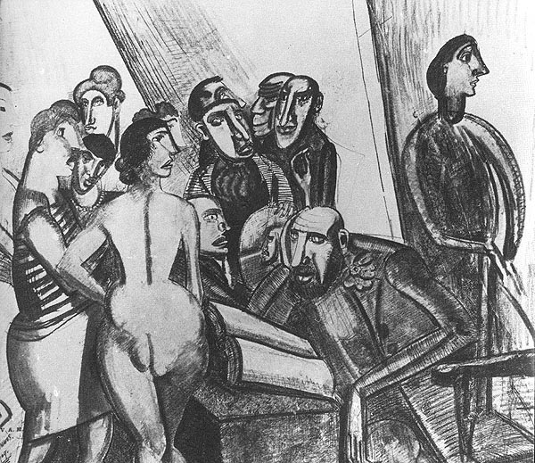

No sensation worth noting
: After the Crowd
While all our ancient beliefs are tottering and disappearing, while the old pillars of society are giving way one by one, the power of the crowd is the only force that nothing menaces, and of which the prestige is continually on the increase. The age we are about to enter will in truth be the era of crowds.1
We are the first men of a Future that has not materialised. We belong to a
great agethat has notcome off.2
When I began this study, I expected to find crowds everywhere; it was only gradually that I realised that, to apply Le Bon’s projected Era of Crowds
to the high-modernist visions of the 1920s you must situate the crowds within a Future that has not materialised
. Neither Pound nor Lewis had much time for the idea of a crowd-art by the 20s.
Still, in the literary scene, we have the disintegration of personality and the external world experienced by the Childermass’s hordes of appellants, caught between the war and postponed entry to heaven. We have the crowds in Mrs Dalloway, that materialise around the unknown, unseen passenger of the motorcar whose face will be known when London is a grass-grown path and all those hurrying along the pavement this Wednesday morning are but bones with a few wedding rings mixed up in their dust and the gold stoppings of innumerable decayed teeth.
3
My assumption had been that that this new phenomena, the Crowd
, seen in the early twentieth century as almost a new social medium capable of dissolving older, more solid bonds, would have left a lasting effect on the medium of art. That works created explicitly as Crowd art
would do things differently, because of these assumptions about Mass man’s
ability to see and think of the world differently.
The critical literature on the great divide
, the lively debate that critics like Huyssen and Jameson have conducted since the late 1970s about modernism’s relationship with twentieth century mass culture
4 certainly seems to suggest that the crowd is there somewhere, that it’s key to understanding the politics of Pound and Lewis’s work.
The more I looked at my chosen texts, though, the more elusive the crowds became. How difficult could it be to find six or seven million people in the literature of twentieth-century London? More difficult, it turned out, than I had at first assumed. As I read, great street-crowds dissolved before my eyes: the crowd in the station of the metro ceased to be a crowd, becoming petals, the stuff of much more traditional lyric. The crowds of The Waste Land were already undone by death, ghosts of a crowd. Mrs Dalloway journeyed through ever more abstract manifestations of the crowd, on a trajectory towards a solitary aircraft, distant, imbued with an almost religious transcendence.
My aim, in this final chapter will be to find a way to deal with the disparity between the crowd’s seeming centrality, and its simultaneous absence: to account for these crowds’ existence, at the centre of modern culture, yet in a strangely disembodied, elusive form.
Form, I think, is the key. We have noted how Lewis configured the crowd as an exercise in reading. What if the crowd is approached more in the spirit of a Le Bon than of a Pound, as a dispassionate observer?
The opening and closing parts of this chapter have a common pursuit: what happens when the language of science is brought across into the aesthetic realm? It’s a big question, and I have deliberately limited my approach to two very small questions which can, nevertheless, be illuminating. First, I shall leap back out of the chronological order of this thesis to examine the formation of Vorticism, circa 1914. Then, returning to the main sweep of my previous chapters, I want to pick up one of Lewis’s crowdtexts in the 1930s, and look at how the aesthetic response to crowd science had been reconsidered in the post-war period. The central part of the chapter examines the elusiveness of the crowd-spirit in the 1920s, and gives us some understanding of its haunted
nature which occasion the sorts of seances we finish the chapter with.
Robert Nye, Gustave Le Bon’s intellectual biographer, has criticised Susanna Barrows’ book, Distorting Mirrors,5 for the way that it treats science as a largely ideological construction, whose findings are shuffled in and out of the writings of crowd psychologists as if they were the images of novels or political speeches.
6 But his claim that Barrows undervalues the scientific content of crowd psychology
is perhaps rather harsh; it make sense of technical and aesthetic concerns in the same breath. Nye’s own essay on crowd culture is one of the more successful examples;7 here is my attempt to account for what happens when writers confront the scientific debates of their time.
excursus on vortex motion: eddies at the confluence of science and art
Vortex
is a difficult word. A quick straw-poll of friends and colleagues suggested a vague general association with whirling eddies, sucking holes, and a sense of the fantastic: formations in space, things that might be prized by players of Dungeons and Dragons. It’s important of course, in the vocabulary of science fiction (it’s there at the birth of space-opera, with E.E. Doc
Smith’s Vortex Blaster
stories of the 1940s)8 and in the growing pseudoscience market (water’s vortex energy
is, newagers claim, the very energy that may be responsible for creating and sustaining our living reality
—indeed, if your municipal water supply suffers from poor hydration power
, placing a spiralled copper vortex energizer
in the afflicted area can, they say, restore its energetic forces
).9 But as students of modern culture, the word Vortex
commands our attention chiefly because of the existence, between about 1914 and 1915, of something called Vorticism, and the journal Blast, edited by Lewis, and subtitled, a Review of the Great English Vortex.
Vorticism
, Wyndham Lewis would write, much later, was what I, personally, did and said at a certain period
.10 Much has been made of this quote:11 it either absolves us from having to reconcile the wildly differing versions of Vorticism that we encounter when we read Blast, or it gives us something to argue against when we want to come up with a new definition of Vorticism, those given in Blast being so unsatisfactory.
My definition of Vorticism, outlined here, is highly idiosyncratic, and steamrollers over most of the aspects of Vorticism that you’d most readily recognise: Lewis’s designs and the play The Enemy of the Stars don’t figure, and neither does the greater part of the Blast manifestos. But don’t worry; none of this is intended to alter those views of Vorticism which see it as the Art of the First Machine Age
,12 or as a movement of individuals
.13 I can see the utility of those critics’ Vorticisms that accept the movement as what Lewis personally did and said immediately before the First World War.
That said, I do find the more rigidly defined versions of Vorticism somewhat problematic: if Vorticism was connected to the patterns that nineteenth-century astronomy found in star systems,14 or even if it is about patterned energies,15 then how does this help us understand it’s cultural implications? Obviously, I don’t mean this as a criticism of Hugh Kenner, who uses the figure of the knot and the whirlpool to explore works and cultural movements, but I don’t think we need any more explanations of what a vortex is unless they can tell us about what Vorticist art was doing. Simply telling us what a vortex is doesn’t explain Vorticism, any more than an understanding of regular hexahedrons can explain Cubism.
My argument will cover some of the same ground as Ian F. A. Bell’s recent work on Pound, Eliot and science,16 but my intention is to address one particular problem. I am very interested, obviously, in Lewis’s and Pound’s engagement with ideas about the crowd, about the new phenomena of mass behaviour and politics which I’ve argued were, to many people in the late-nineteenth and early-twentieth centuries, seen as one of the key problems of modernity. Critics have had much to say about where Vorticism fits in with these ideas: Andrew Wilson, for example, in the most recent book on the subject, writes of Lewis’s Vorticism, in which the identification of body with life delivers another sort of Body; a hard-edged robotic manikin, part of the faceless unthinking crowd
.17
But for me, one of the problems with the way this question is tackled is the way that really quite half-baked texts are read as though they had the status of coherent philosophy. If you look carefully at that quote from Andrew Wilson, you’ll see that the first part of the sentence, lifted from Lewis’s speculations on the wild body
in an early essay, is presented as a transparent critical formulation, which it isn’t; as if it explained Lewis’s presentation of the hard-edged robotic manikin
and the faceless unthinking crowd
, which it doesn’t.
The problem becomes clearer when one examines Lewis’s story in the second number of Blast, The Crowd Master
. It’s the most interesting thing that Lewis wrote, and he came back to it again and again, but when it’s read at all, readers have tended to see it as expressing a moral
position on the psychology of the crowd: Lewis is either stigmatising the crowd as a soft effeminate mass, as against the good
hard masculine vorticist individual. But the story patently doesn’t do this: rather it’s testing modern scientific theories of the crowd, against the resources of modern art. What happens, the story asks, when an artist works as though he were using the rather dubious framework of an powerful through eccentric analytical science—in this case the science of crowds—in place of the usual aesthetic framework: this happens, and this ends up being a marvellous, fragmentary and self contradictory text that gives us a surprising perspective on the psychological means of writing.
I want to use the image of the vortex as a way of looking at these questions. I think it could help us to focus on this idea of art acting as though it possessed a similar means for understanding the world as science. It could help us to see the vorticist artwork not as a sad, failed adjunct to a promising body of speculative criticism, but as the creation of a new kind of aesthetic practice—an art that is forced to behave as if it were science—which takes a particular style of critical posturing only as its most important working tool.
aesthetics and mechanics
And so what does Vorticism mean? Someone first encountering other avant-gardes could, I suspect, feel reasonably comfortable with the cube
in cubism, the future
in futurism, the image
in imagism: the words here at least seem to refer to kinds of things we might associate with aesthetic practice. But vortex?
Lewis attributes the coinage to Pound; Pound starts using the word regularly in about 1913, first of all to refer to London: London…is like Rome of the decadence, so far, at least, as letters are concerned. She is a main and vortex drawing strength from the peripheries.
18 Anyone familliar with the Blast manifestos will at once recall their talk of a great london vortex, and much has been made of this, with critics suggesting that Vorticism is primarily an art of place, an aesthetic of the London Metropolis.19 I’m not happy with explanations that stop here. Vortex is not commonly understood to be equivalent to Metropolis, or to London. Whence the metaphoric leap?
Pound’s next use of the word, in an article on Jules Romains’ poetry written in late 1913,20 makes me considerably happier given my interest in Crowds. Pound is translating Romains’ Ode à la foule qui est ici
—Romains being the one-man representative of the Unanimist school, which proposed an aesthetic based on the proposition that large conglomerations of people (an audience, a crowd, or a city) shared a single soul or substance. Scientific laws about crowd minds were popular in France following Gustave Le Bon’s work, and his formulation of a law of the mental unity of crowds
. Pound, in his translation, is trying to match the imaginary technical vocabulary of crowd-science that Romains drops into his declamatory ode:
He feels the warmth of the crowd, he feels the focus of eyes.
Je ne vois pas si sa prunelle est noire ou bleue ;
Mais je sens qu’il me touche;
He becomes thecrateror vortex.
Ecoute; Little by little the voice issues from my flesh—
And seeks you—and trembles—and you tremble.21
Let’s hold this idea of vortex as a pseudo-technical word (sci-fi, new age)—an imaginary term to describe the notional point where Crowd Mind Energy is concentrated, or something. I’m interested in this idea of an imaginary technical vocabulary. Lets fast-forward nine months or so, and look at Pound’s definition of vortex
in the Blast manifestos:
The vortex is the point of maximum energy.
It represents, in mechanics, the
greatest efficiencyin the precise sense—as they would be used in a textbook of mechanics.You may think of man as that toward which perception moves. You may think of him as the toy of circumstance, as the plastic substance receiving impressions.
Or you may think of him as directing a certain fluid force against circumstance, as conceiving instead of merely observing and reflecting. (B1, 153)
As they would be used in a textbook of mechanics
—that notion of an imaginary vocabulary again. How would vortex
be used in a textbook of mechanics? What does it have to do with mechanics? And what’s all this about efficiency? Clearly, we are in a world of imaginary poetics where things are as clear and technical as in the world of mechanics. Let’s take a quick look, anyhow, at the way Vortex might be used in a textbook of mechanics, and see if it throws any light on my questions.
In Latin, vortex
meant a whirl or eddy, and is usually associated with wind or water; passing into the English language, it would retain this classical sense of an epic natural force: the wreck of the Trojan fleet, the rocks of Scylla, the pits and vortices of Mount Aetna.22
During the Enlightenment, however, when Descartes theorised the universe as an aetherial field of eddying atoms, he used the term vortex
to refer to the whirlpool-forms the ether took around celestial bodies—so that, for example, the earth floats in a solar vortex of subtle atoms whirling around the sun, which drive the earth along with them. Vortex was suddenly a key word for conceptualising the cosmos, in ways that were intimately bound up with natural philosophy, with materialism, with new ways of knowing about the world. The Presbyterian bible scholar Matthew Henry translated the poetry of King James’s Ecclesiastes—I have seen all the works that are done under the sun
—into the terms of this recent technical, philosophical cosmology: what was meant, he said, was that he saw…all within this vortex (to use the modern gibberish) which has the sun for its centre
.23
The idea of the Cartesian vortex would soon die. Swift foresaw it in The Battle of the Books, when he killed off Descartes in a volley of philosophical arrows: The Torture of the Pain, whirled the valiant Bow-man round, till Death, like a Star of superior Influence, drew him into his own Vortex
.24 But it was Newton’s gravity that eventually killed off Descartes’ vortex theory.
smoke rings and vortex atoms
The vortex theory of atoms that emerged in the 1860s, and survived into Pound’s and Lewis’s childhoods, was developed chiefly by William Thomson (better known as Lord Kelvin), building on work done in fluid dynamics by the German scientist, Herman von Helmholtz.25 Obviously, we don’t have time to go too deeply into the science of vortices, which reappear in the history of physics with an almost predictable regularity, most recently in work on superstrings. Helmholtz had proved in a series of theorems that, given a continuous frictionless fluid, isolated from external forces, whirlpool-like motions would form themselves into stable vortex rings
—donut-shaped structures of fluid rotation that were utterly immune to destruction or dissipation.26
Vortical movements in a continuous fluid would become a fruitful source of speculation in the fast-moving world of British physics. James Clerk Maxwell was arguing, by the beginning of the 1860s ,that electromagnetic lines of force were driven along by the movement of vortex filaments rotating in the ether, an image that would become one of the most famous in nineteenth-century physics.27
But in 1867, a spectacular demonstration of the existence of Helmholtz’s vortex rings in nature brought these stable structures of movement to the attention of William Thomson. Peter Guthrie Tate had set up some apparatus which expelled smoke rings into his Edinburgh lecture theatre. The smoke rings resisted all efforts to cut them with a knife; they simply wriggled around or moved away from the sharp object. When two rings were propelled towards each other, they interacted in peculiar ways: they either glanced towards one another and went into a state of violent vibration, passed through one another, or expanded ever more slowly towards one another, never quite touching, depending on the angle.28
It was this behaviour that stimulated the vortex atom theory: Thomson saw an analogy between these corpuscular smoke structures, and the kinds of corpuscular structures which, if they existed in a continuous electromagnetic ether, could constitute the atoms from which all matter was built. The theory has recently been characterised as an ambitious attempt to establish a unitary and continuous
29 In his Adams Prize essay of 1882, young J. J. Thomson gave an elaborate account of the vortex theory and extended it to cover chemical problems, including affinity and dissociation. As late as 1895, William Hicks gave an optimistic report on the state of art of the vortex atom at the annual meeting of the British Association for the Advancement of Science (BAAS). Hicks’s view of the goal of theoretical physics is worth quoting at some length:theory of everything
based solely on the dynamics of the ether.
While, on the one hand, the end of scientific investigation is the discovery of laws, on the other, science will have reached its highest goal when it shall have reduced ultimate laws to one or two, the necessity of which lies outside the sphere of our recognition. These ultimate laws—in the domain of physical science at least—will be the dynamical laws of the relations of matter to number, space, and time. The ultimate data will be number, matter, space, and time themselves. When these relations shall be known, all physical phenomena will be a branch of pure mathematics.30
But really, you may well ask, how can you justify moving from Helmholtz’s work in fluid mechanics, Maxwell’s lines of force, and Thomson’s use of vortex motion to unify matter and force, and making the leap to Vorticism and the English avant-garde of half-a-century later? Herman von Helmholtz may be a fine physicist, but it’s a little obscure to try and pin an art movement on him.
Well, for a start, more important art movements than Vorticism have been pinned onto Helmholtz, who’d also done a lot of work on the biology of visual perception. The cliché that Impressionism rested on Chevreul’s popularisation of Helmholtz’s optical discoveries was already well established by the time Pound apparently became interested in vortices, being rehearsed, for example, by Anthony M. Ludovici in a 1912 review in the New Age31—precisely the magazine that those early quotes where Pound mentioned vortices came from. Helmholtz was, in many ways, a ninteenth-century equivalent of, say, Benoit Mandelbrot, Douglas Hofstadter, or Steven Jay Gould, a technical pioneer who became a household name because of the influence his essays had in the arts and humanities. Certainly, he was well-known enough that correspondents to the New Age could quote Helmholtz when complaining about the follies of Cubism, as one did in March 1914.32
But if we’re looking for direct evidence of Pound’s awareness of Helmholtz and vortex theory, it’s to the Egoist that we should turn, rather than the New Age (the Egoist being another leftfield Edwardian journal, much more closely affiliated to the Pound-Lewis axis of London art, an advertiser in the back of Blast). Because Pound had an alter-ego; his name was von Helmholtz
, and he wrote reviews for the Egoist. Pound signed four of his reviews in 1914 with variations on the Helmholtz name—either Bastien von Helmholtz or Baptiste von Helmholtz.33 The joke has nothing to do with the contents of the articles, which are thoroughly Poundian and not at all Helmholtzian, but they were published in the February and June of 1914.
The second batch, then—the June batch—were published little more than two weeks before Pound’s vortex manifesto appeared in Blast, the one where he spoke of the vortex as the point of maximum energy
, as they would be used in a textbook of mechanics
: mechanics being precisely the branch of science to which Helmholtz’s vorticist theories of fluid dynamics belonged.
Really all this organised disturbance
—Lewis is writing about the heyday of Vorticism—was art behaving as if it were politics
.34 Obviously, I’m not talking about politics today, but I like this as if
—art behaving as if it were politics
—as a way of thinking about Vorticism’s relation to electrodynamics.
Lewis’s as if
strikes me as a particularly fruitful paradigm for the way that our art—crowd-science is operating. T. J. Clark comes close to it in his discussion of Cubism, where he formulates what he calls the
. Picasso’s paintings, Clark argues, ask, as if
hypothesis
35What would it be like…to have a new means of representing the world, and to have those means be complete and efficient, with the power to discriminate a whole other set of aspects to visual—maybe mental appearance?
It would be like this.
It would be like this, these Vorticist fragments likewise say, if we could harness the kinds of energies imagined by the physicists (no matter whether the physics holds up to contemporary scrutiny). (As if, not just so: this is how we might imagine the world, and not this is how the world is). And T. J. Clark’s argument is useful here because he finds a way to move beyond the inflexible classic
view of a modernism that responded to changes out there in physics
. Modernism, Clark argues, did not devise a new description of the world
—It was a counterfeit of such a description—an imagining of what kinds of things might happen to the means of Western painting (let’s substitute, British Art) if such a new description arose.
36
We use the words
, Pound had written in his Vortex manifesto, as they would be used in a textbook of mechanics.
I wonder whether these vorticist texts and studies are asking what might happen to the means of poetry if poetic language were to be reimagined as capable of the same kinds of work as precise descriptive mathematics. Of course, the poetry does not actually have to measure natures forces with a mathematical precision; certainly, nothing that Pound published in Blast does. What’s important is the possibility of a new way of seeing art.
the crowd’s after-image
In the spirit of this what if
, let’s try another: what if it was 1922, and you were reading The Waste Land for the first time. On the one hand, there is the testimony of art, and on the other, of the historians. Looking back at 1922, we find that the Crowd has has recently had a rich few months in the social and political debates of London. After the year of the drought, when
, as Richard Aldington remembered, no rain fell for six months…and the fields of England were burned brown,
a brown winter fog settles again over the city, and with it an election. Lloyd George, once the great tribune of the mob
—Do you think Lloyd George has the Vortex in him?
, Lewis had joked in the first issue of Blast—seems to have lost touch with the crowd
; he resigns in October, three days after Eliot’s poem is published, and the disparate interest groups which had made up his Coalition Government, previously united in their collective dazzlement at his variety…performance
, drift back to their respective parties.37
Lloyd George had famously put the focus on the crowds of 1914 as a driving factor behind the coming of war:
The theory which is propagated today by pacifist orators…that the Great War was engineered by elder and middle aged statesmen who sent young men to face its horrors, is an invention.…I shall never forget the warlike crowds that thronged Whitehall and poured into Downing Street, whilst the Cabinet was deliberating on the alternative of peace or war. On Sunday there was a great crowd. Monday was a Bank Holiday and multitudes of young people concentrated in Westminster demonstrating for war against Germany. 38
The crowd itself, which had been so visible throughout Lloyd George’s premiership, appears suddenly less starkly: last year’s aborted general strike, which had caused such panic regarding the influence of the mass (incomparably the greatest working-class upheaval that has ever taken place anywhere in the world
a contemporary prophesied in the run-up), was a non-event, called off at the last moment. In 1922,
writes a contemporary, you will hear that the British working man is too staid and sensible a person to think of revolution except through the ballot box
.39
And so, while the 1922 election appears as a battle in the mist
, while there is no lifting of the fog as the campaign nears its end
, while the issues appear so vague and so confused that a very large proportion of the electorate does not know in the least how to vote
—such vagaries and obfuscation are merely things that a responsible electorate will have to try to work out in this time of return to party politics. People can think again and talk again;
Le Bon’s stark warnings about electoral crowds
and their thoughtless impulses no longer appear very relevant. After the pre-war crisis and a few brief summers of post-war unrest, it’s becoming clear that the return to a staid, sensible parliamentarianism is absorbing the revolutionary energies of the one-time suffragettes and strikers. Everything that made the psychological crowd appear so starkly before the war—its dazzling, primitive collective energy, imagined to move beneath and against the modern current of rationalisation—is now beside the point. The possibilities of direct action envisaged by the pre-war strikers, and the new politics of collective unity and marvellous effect which they seemed to represent, have vanished in the Westminster fog.40
There was,
recalled Ford, on his way out of London that November, as I passed through Trafalgar Square, a dense fog and the results of a general election coming in…an immense shouting mob in a muffled and vast obscurity. The roars made the fog sway in vast curtains over the baffled light-standard. That for me was the last of England.
Occultation; vast obscurity; the last of England: how far he had come from the Shepherd’s Bush Exhibition before the war, when an infinite clear radiance of pure light
, illuminating upturned faces in the infinite moving mass
of the Crowd, had seemed to open up the possibility of a future crowd-art.41
These two moments, the moment of disclosure and the moment of foreclosure, define, I think, the parameters of my study. We will return to consider their meaning before the end of this chapter, and not allow ourselves to be delayed too long by their ramifications. Both moments had been present in LeBonite crowd-theory all along though: the crowd’s power to dissolve the world and bring about end of civilisation, and to bring new formations into being. Is this not where the vision of the crowd most closely touches the vision of modernism?—modernist art as an art which dissolves the world, positing a radical break with the aesthetic forms that have come before, and imagining that art might call a new order of things into being?
So what, you will ask, has any of this to do with the poem Eliot wrote? My claim that the crisis was over by 1922 already seems at odds with precisely those readings that have associated The Waste Land with the Crowd; that have drawn on Klaus Theweleit’s reading of Fascists’ anxiety about a red flood
to link the poem’s fear of death by water
with a public fear of revolutionary tides and collapsing boundaries.42
The poem’s contract with its reader—I will show you fear
(30)—seems to me to serve an aesthetic of strangeness which unsettles precisely because of it’s refusal to be elucidated
(whatever gestures the notes may make in this direction) by reference to anything else. We are sequestered, figuratively under the shadow of this red rock
, within what one of the most astute readers of the poem’s politics has called its alternative civil society
, its own universe of discourse
.43 And in this shadowy space, it’s the unconsummated formal patterns and extemporally caricatured voices that disturb: the way the poem intimates pattern, quotes or echoes voices and verbal structures that we’ve come upon earlier or will come upon later in the poem, leaving them unresolved as new patterns or voices suggests themselves, each emerging and receding in turn.44
Anyway, the civil and industrial unrest that preceded Lloyd George’s resignation certainly didn’t unsettle Eliot, who’d mocked the idea that the Three Trades-Unions
—the alliance of the major industrial unions capable, it was thought, of seeing through a General Strike—would really bring anyone to the point of perdition
. While the J. C. Squire-reading middle class’s citadels appear to topple, it is busy strengthening its foundations
. Writing to his mother, before she visited him in London (this was in the late April of 1921, while he was drafting the first two sections of his poem), he coolly registered the increasing tendency for mass actions to be settled
almost as soon as they were declared: the coal strike will look much more alarming to you than it does from here
, he reassured her. It may be settled before you get this letter…. The temper of England is not revolutionary
.45
If we read The Waste Land as an expression of the doubt that there was any way that English culture would hold together with a vastly expanded electorate
, or as a recapitulation of the Conservative Party’s distinct strategy for achieving political power
, then I think we have missed some of this strangeness.46 We could be too rigid about correlating the dust—I will show you fear in a handful of dust
—to the compounded human particles of the crowd (a common enough image: remember the fine dust of extinction,
which, Lewis wrote, `is scattered in any crowd like these black London war-crowds):47 about trying to explain
its marvellous, ambiguous images by pinning them to contemporary events. I’m interested in what might happen if we were to shift the focus away from The Waste Land’s supposedly conservative fear of crowds (which I’m arguing was, by 1922, passé, anyway), and onto the patterns of disappearance and absence in the poem. What might one make of these patterns, reading Eliot’s poem at the very moment the crowd was vanishing in the fog?
Focussing on an England where revolution could be so easily dismissed will, I hope, preserve the tentative, surprising ways that the strike, and the crowds of 1921, did impinge on Eliot’s poem. Before the war, when Pound was beginning to formulate his image of the London Vortex
, it was the 1913 coal strike that gave him faith in the future of England
: A million men going out of work and keeping perfect order. No! The thing is stupendous…Nascitur ordo.
It was this bright vision—the birth of a new, collective order—that had informed the avant-gardist mileu from which Eliot emerged a professional writer. And if he wasn’t overly concerned by mass unrest in 1921, he did note how the long smokeless summer of the coal strike…turned a blazing glare on London, discovering for the first time towers and steeples of an uncontaminated white.
It’s tempting to speculate that The Waste Land’s white towers
(289), once you clear away the critical soot which has obscured such historical details, may carry within them this moment when the architecture of a collective past was revealed, through the occult influence of the contemporary Crowd, stark and uncontaminated by the obscuring fog: a ghostly imprint left on the reader’s retina after the image of that glimpsed collective has faded.
For a couple of years after the war, Eliot could still envision a poet who drew motive energy from the mind of [their] own country,
rather than their own private mind
, tapping into an instinctive habit on the part of the public, to respond to particular stimuli.
But by the time he was drafting The Waste Land, a contrary strain had entered such arguments, voiced in the dandyish Tyro essays and London Letters
of 1921 and 1922 (which, unlike the earlier Tradition
essay, would not become fast-frozen in the canonic Selected Essays). The modern art he wanted, an art which would gather up the last, unconscious fragments of a possible English myth
, and transmute them into a collective ideal
—a universal figure, feeding the idealism of hungry millions
—was slipping, even as Eliot tried to elucidate it, from view.48
And after 1922, after The Waste Land was put before the public, something…had happened to the mind of England
: it could no longer be embraced as an immanent reality, the Group Mind valorized by collective psychologists, and apparent behind the everyday movements of London’s postwar crowds. For the generation of critics who would rally behind Eliot, the collective mind would get swallowed up by more misty notions of a golden-age coherence
that was now (now
being since the war or since the Restoration, depending on the particular version) irrecoverably lost: a vanished organic community
, a lost wholeness
, or integrated sensibility
. The fate of these ideas would be another story: their meanings, and their use by cultural critics in the `30s as a stick to beat the masses
, have been productively explored in recent studies of modernism.49
To imagine how you might have made sense of the poem in 1922 entails both a return to the crowd, and to the moment of the crowd’s eclipse. The moment of The Waste Land was the moment when the most powerful of modernist visions—the apparition of the crowd—disappeared from view; but at the same moment, the afterimage of that vision—the ideal of an art whose integrity was drawn from the vanished crowd—appeared most starkly. The Waste Land, modernism’s first poem, stands in relation to Le Bon’s projected era of crowds
in the same way that, according to Lewis, Eliot and the men of 1914
stood in relation to a larger myth of modernity: We are the first men of a Future that has not materialised. We belong to a
great age
that has not come off
.
1922: a return to the scene of the crowd
The strangeness The Waste Land held for its earliest readers is well known. Virginia Woolf, hearing Eliot perform his work, and seemingly impressed by his range of ventriloquism—he sang it & chanted it [and] rhymed it
—was left with some strong emotion
which she seemed unable or unwilling to give a name to; she noted the poem’s symmetry
, but admitted that what connects it together, I’m not so sure
.50 A little later, Harold Monro schizophrenically described the reaction of a friend
who found the poem’s perverse playfulness an outrage
, while arguing for himself that it eluded any critical measure. Eliot’s poem struck him violently
; it is fierce and horrible
: Eliot’s contemporaries pale as one reads The Waste Land
, and yet the impressions that it leaves on the reader’s mind seem so contradictory that a large majority of minds will never be able to reconcile them, or conceive of it as an entity.
Here is a very noble picture; and in what does this poetical picture consist? In images of a tower, an archangel, the sun rising through mists, or in an eclipse, the ruin of monarchs, and the revolutions of kingdoms. The mind is hurried out of itself, by a crowd of great and confused images; which affect because they are crowded and confused. For, separate them, and you lose much of the greatness; and join them, and you infallibly lose the clearness.51
A lot would happen in the months following Eliot’s performance, for Woolf, of his completed poem: The Waste Land would be published, and more and more text would begin accruing to it. I can’t help wanting to link this to the white towers and the fog: wanting to glimpse, behind the heavily overwritten text that’s come down to me, the moment when Woolf could take literally Eliot’s characterisation of his poem as rhythmical grumbling
, so that she had only the sound of it
in her ears, and hadn’t yet tackled the sense. But…liked the sound
(—one doesn’t quite know what it is that one wants to get off one’s chest
, Eliot put it, until one’s got it off
).52 But of course the idea of a sensual, fragile original, that could be apprehended directly and without recourse to the sense,
is a dream: a dream not so different from the dream of a crowd-art that was imagined in 1913 to work directly through prerational sympathetic bonds, and far in advance of the kind of hard work
of critical elucidation that has been The Waste Land’s historic burden.
I want to hold onto this dream, though, even though it would vanish behind the published poem. We can glimpse gestures towards this kind of direct communication: in the opening of The Fire Sermon
, for example, where, in a landscape emptied of everything except song and performance—where the wind is unheard
and the nymphs are departed
(175); their friends have left no addresses
(181: this and the following emphases are mine) and the river bears no empty bottles
(177)—what remains are effects of rhythm and sound, stagey snatches of voice, their individual character lost in a common medium of direct communication that finds its climax in the pure sound poetry of
Twit twit twit
Jug jug jug jug jug jug
So rudely forc’d
Tereu (203-6).53
But what kind of reading experience will allow us to preserve the dream, glimpsed in passages like this, of a poetry where effect is everything, and still do justice to Monro’s urge to put these effects into some meaningful kind of order—to reconcile them
, to conceive of them as an entity
? That’s the question I address in this section; my answer, my attempt to return to 1922, will actually be very simple, pedantically recording what texts were available when. Because when, a year after Eliot’s performance, Woolf finished setting the type for the Hogarth Press Waste Land with her own hands,54 the elements that would determine whether it wasn’t or was read as a crowd-poem, as a piece to be sung and chanted and savoured in the ears, as the troubled autobiography of a déclassé haute-bourgeois, or as a pinboard for the aspirations of a generation of literary critics, were already in place.
Eliot first published it in his new review, the Criterion, in mid-October 1922, and a few days later it had its first American publication in the Dial. As yet, there were no published notes to accompany the poem. These would appear less than two months later, when (on 15 December) Boni and Liveright published Eliot’s poem as a short book. For British readers, this noteless hiatus would last much longer. Like Harold Monro, they would have to wait a whole eleven months, until the first London edition: the one set by Woolf at the Hogarth Press.55
Monro had already heard about the rumoured allusions to…thirty-three sources
, though he’d not yet seen the notes. He’s one of the last early readers to record his impressions without one hand on The Golden Bough, and doesn’t seem to have felt the urge to fill his shop with copies of From Ritual to Romance. But the rumours had nonetheless suggested to him the specific practice which became seemingly instinctive to the actual readers of The Waste Land: the urge to shore up the poem with more text. He put it to an imaginary Eliot that it is not very easy for those who have not read your book The Sacred Wood to understand your poetry. Some insight into your mind is advisable
(Possibly
, is the mock-Eliot’s not-very-helpful response, —Well?
), and worried he was incapable of understanding the poem because my reading is not sufficiently wide.
My argument will rest on this sociological fact: that, confronted with the fierce, violent, sonorous, irreconcilable strangeness of The Waste Land, its readers thirst for some insight
, some way into tackling the sense
—we want a context.
Monro thought The Sacred Wood, Eliot’s book of criticism, might provide one; Edmund Wilson, who would make straight the way for readings of the poem which focussed on sources, privately wondered whether a more private pretext shouldn’t also be sought, so that The Waste Land became a most distressingly moving account of Eliot’s own agonized state of mind during the years which preceded his nervous breakdown
;56 but for most readers, the notes at the back of the book would be most convenient.
True, their stunning success at providing a model of reading, a model for the elucidation
or explanation
of a work (so that by the `30s it could be said that the lust for explaining modern poetry starts…with the first comments on
) has waned in recent years, and with it the sense of The Waste Land as the master-text of modern poetry.57 They won’t give us a Waste Land that’s very useful in the 21st century. But if my question is how, if it were 1922 and you were reading The Waste Land for the first time, you would get beyond Woolf’s or Monro’s first impressions—of how those first readers, flailing about for some explanation that might settle the matter, some way to reconcile its violent impressions and discover The Waste Land
what connects it together
, might have found a way into the poem—then the most obvious answer (the one which seemingly has the advantage that it is confirmed by the critical history of the poem, that it tallies with what most of those readers actually did) would be would be that you read the notes: that their model of a work with a plan
and incidental symbolism
will structure your reading, allowing you to make sense of the poem’s complexities.
The weakness of such an answer—besides any objection that making sense of the complexities
really means flattening them out, being rid of the strangeness that originally enthused the reader—is that, if you were reading the poem when it first appeared, in The Criterion or in The Dial, the notes didn’t exist yet: you’d have to wait for the book publication.
eliot’s london letter: elucidating the difficulties
How might you have read the poem, I wonder, if you’d simply grasped onto the next thing by Eliot you came across, imagining that it might help you elucidate the difficulties
of the poem? For an American subscriber to the Dial (who, you will remember, had read The Waste Land in the November issue), that would have been the London Letter
in the December issue (which nevertheless appeared in mid-November, a little less than a month before the Boni and Liveright Waste Land),58 the one where Eliot admitted to being quite incapable of taking any interest in any literary events in England in the last two months, if any have taken place
, so depressed was he about the death of Marie Lloyd.59 For a follower of literary events in England, subscribing to the Criterion, it would be In Memoriam: Marie Lloyd
, a very slightly revised republication, in the issue for January 1923 (the Hogarth Waste Land, you will remember, wouldn’t be published till September) of that same article on Lloyd’s funeral. Could the funeral of Marie Lloyd, then, and the way that Eliot interpreted it, provide a way into understanding the patterns that appear and then vanish from view, or the ventriloquism, the voices who fade the moment they are audible, in The Waste Land?
Neither response, Woolf’s hurried diary entry or Monro’s playful, wryly self-deprecating Notes for a study of The Waste Land
, claims to say anything very authoritative about the poem. But their superficial sense of uneasy strangeness, it seems clear, does not point to the work of a poet who recognises the necessity that he shall conform, that he shall cohere
(SE 16). A reader seeking to get beyond their stolen sense of The Waste Land as a new and not easily readable thing would need another model of coherence than that found in Eliot’s prescriptions of 1919.60
First, how could they resolve the ferocious strangeness—what was it, Tradition’s violent burlesquing? or could it be dismissed as a bad joke, worthier of Punch than of a serious poet
?—that was implied when such wildly varied fields of cultural knowledge as Oliver Goldsmith and Typewriter Girls intrude on one another? (—it was this distortion
at the end of the typewriter girl passage,
When lovely woman stoops to folly and
Paces about the room again, alone,
She smoothes her hair with automatic hand,
And puts another record on the gramophone. [253-6]
that so outraged Monro’s friend
)61 This wasn’t what Eliot was thought to mean, in 1919, when he declared that the tradition must be ever so slightly altered
by a new work (SE 15).
Secondly, Woolf was struck by the poem’s symmetry
: an interesting word to choose, given her contemporaries’ first sense of the poem (even those sympathetic to it) as a collection of flashes
, disconnected, confused
.62 Though the poem’s many internal systems of patterning (and symmetry is one of them) appear coherent enough in themselves, their very coherence seems to insinuate a transcendent master-pattern to which they all conform—a system that connects it together
and which Woolf was unable to identify. But the such coherence is always, ultimately, withheld; almost as soon as we discover an ordering principle, it vanishes.
As an example of what I mean by this, an argument that the poem frames a kind of fearful symmetry might begin by noting how the beginning of the its last section recapitulates elements from the beginning of its first: the dry stone
, which gave no sound of water
(TWL 24) in The Burial of the Dead
, is echoed by the unforthcoming sound of water over a rock
(355) of What the Thunder Said
, and by the stony places
(324); the mountains
(17)—where you feel free
—are echoed by the distant mountains
(327), which are mountains of rock without water
; spring rain
(4) finds a response in the thunder of spring
(327). And there are fainter echoes: sunlight
(10) is answered by torchlight
(322); we stopped in the colonnade…and drank coffee
(9-11) becomes we should stop and drink
(335).
Better, we could go on to say that a kind of progression has occurred: they reappear more negatively even than they’d appeared originally, drained of every vestige of positive content. In place of the spring rain
(TWL 4) stirring dull roots, we hear only the thunder of spring
(327) which is dry sterile thunder without rain
(342); Marie’s idyllic truism, in the mountains, there you feel free
(17), is torn into with an incommensurate ferocity, verging on caricature:
Here one can neither stand nor lie nor sit
There is not even silence in the mountains
But dry sterile thunder without rain
There is not even solitude in the mountains
But red sullen faces sneer and snarl
From doors of mudcracked houses (340–45)
The reader, shocked at each new turn into reassessing their sense of how the poem might cohere, isn’t privileged with a stable vantage point. Elements from an obscure symbolic vocabulary appear, and disappear as promptly as they came, without giving us the opportunity to understand whether they occupy any meaningful place in the poem’s overall form.
Could this be, I wonder, an appropriate response to the conditions prevailing in England, in Europe, at the time that Eliot was writing the poem? That is, could the poem be drawing, on some formal level, on the logic of vanishing hopes in the real world? It’s difficult to go much beyond speculation at this point.
This, anyway, is how I want to conflate the history of crowd action and The Waste Land: not by looking at the crowds in the poem, but by looking at how the formal elements of the poem relate to a particular historical crisis of crowd form. Attempts to historicise the poem have occasionally suffered the same weaknesses as traditional readings of Eliot: they degenerate into source studies, reference-spotting. We shouldn’t worry about pointing to the shrubs and…trees
that had wilted and died
in the 1921 drought (and thus caused some perturbation in the popular mind
) as sources for Eliot’s dead tree
that gives no shelter,
any more than his cricket
that gives no relief
should be seen as referring to the Australian cricket team’s annihilation of a crippled, effete
M.C.C. eleven in front of a strange new class of crowd, the workaday type of office-goers
who attended the 1921 ashes series in their tens of thousands.63 Such historicist speculation is as easy to argue with—no worse, perhaps, than the claims that the tree and cricket have their analogues in a tree defended by the ancient priesthood of Nemi, and in Ecclesiastes’ burdenous grasshopper. Yes, the poem will go on to hint at a pattern of Golden Bough-like sacrifice—The Hanged Man
(55), buried corpses (71) and all that—just as in this passage it speaks in a voice suggestive of the terrible authority of the Old Testament prophets. But it will also hint at an account of the material testimony
of London, the empty bottles, sandwich papers, / Silk handkerchiefs, cardboard boxes, cigarette ends
(177–9) and other detritus that left their trace on contemporary life: an account for which the dead trees and cricket are equally fitted.
So lets stay much closer to the surface of the poem, attending to these patterns of emergence and disappearance; it is these patterns, I think, which would be brought to the fore if we were to read the poem with a focus on Eliot’s Marie Lloyd essay, with our imaginary assumption that his writing on Marie Lloyd will elucidate the difficulties
of The Waste Land. But first, we need to outline a few background details, the significance of Marie Lloyd for an understanding of the forms of crowd history.
the burial of the dead
On Tuesday, 3 October, 1922—less than a fortnight, that is, before Eliot’s Criterion was released, and The Waste Land was put before London’s literary public for the first time—a gaunt and shrunken figure, wearing a long, ill-fitting dress and a crushed plumed hat (a middle-aged woman of the charwoman class
, Eliot called her)64 stumbled, half-drugged, into the footlights of the Edmonton Empire. She was carrying a large handbag, and singing:
I came across an abbey
That was tumbled all to bits
It seemed a relic of a bygone day.
They joined in the chorus:
It’s a bit of a ruin that Cromwell knocked about a bit
One of the ruins that Cromwell knocked about a bit
In the gay old days, there used to be some doings
No wonder that the poor old abbey went to ruin.
Partway through, the singer stumbled, toppling over. Her weakness was mistaken by the audience for fine comic acting,
the manager of the Empire said later, and they shrieked with laughter as she fell.
Marie Lloyd was funny even in death.
According to Ford Madox Ford (who at the time was attempting to work out, in Mister Bosphorus and the Muses, how Music Hall and Variety might inform a new kind of long English poem), London traffic stopped for half a minute whilst the paper boys ran down the streets shouting:
65 James Agate, who contributed occasional pieces on Music Hall to the Saturday Review, was even more insistent on the moment’s [out-of-time-ness]:Ma-rie dies! Ma-rie’s dead!
When, in Tottenham Court Road, I saw the sheet which announced that Marie Lloyd was dead, everything around me became still. The street lost its hubbub, and for a space I was alone with a sharp and almost personal sorrow….
Marie—pronounced with the broad vowel beloved of the cockney—was in everybody’s mouth that day, in club and barrack-room, in bar-parlour and in modest home. On the high seasMarie’s deadwould be droned from ship to ship.
This is how Eliot’s original Marie Lloyd essay, the last London Letter
that he’d written for the Dial, had begun:
Marie Lloyd’s funeral became a ceremony which surprised even her warmest admirers:
The scenes from an early hour yesterday, had been eloquent of the supreme place which Marie Lloyd held in the affection of the people. Wreaths had poured into the house in Woodstock Road from all parts of the country. There were hundreds of them from people whose names are almost household words on the variety stage, and from such people as66a flower boyin Piccadilly Circus: the taxi-drivers of Punter’s Garage: and the Costermongers’ Union of Farringdon Road…. Bombardier Wells sent a wreath. It was a white cushion, and across it in violets were the wordsAt Rest: With deepest sympathy from Mrs and Billie Wells.…Tributes were also sent by Hetty King, Clarice Mayne, Clara Mayne, Little Tich, Arthur Prince, George Mozart, Harry Weldon, Charles Austin, Gertie Gitana, the Brothers Egbert, Zetta Mare, Julia Neilson, and Fred Terry, Mr and Mrs Frank Curzon, Marie Loftus, many of the provincial music-halls, the Gulliver halls, and dressers from most of the theatres, and many of Miss Lloyd’s old school chums…. A favourite song of Miss Lloyd’s was recalled by a wreath fashioned like a bird’s cage. The cage was open, but the old cock linnet had flown…. A large floral horseshoe, with whip, cap, and stirrups, was fromHer Jockey Pals—Donoghue, Archibald, and other men famous in the racing world…. There were other wreaths from the National Sporting Club, the Eccentric Club, the Ladies Theatrical Guild, the Variety Artists’ Federation, Albert and Mrs Whelan, Lorna and Toots Pound, Kate Carney, Nellie Wallace, the Ring at Blackfriars, Connie Ediss (who sent red roses) the Camberwell Palace (a white arch with two golden gates), Lew Lake, Major J. Arnold Wilson, and innumerable other people.
The image of loss used by Eliot—where the flowers stand in for a strangely absent crowd of mourners—seems to have a dissonance that was shared by the people mourning those they’d lost in the war.
Thirty days after Marie Lloyd’s funeral, at 11 o’clock in the morning, a huge crowd had gathered at the Cenotaph in Whitehall to remember the fourth anniversary of the Armistice. A cenotaph, literally, is an empty tomb, a monumental absence, and there’s a sense in which the post-war armistice crowd were also standing in for those absent: the Times noted how many women wore the medals of dead husbands and sons, and everyone wore a poppy for remembrance: an endless procession
—the stream of them seemed to have no source, the flow no stop
67
a mysterious law of appearance and disappearance governs everybody
In the months that Eliot was publishing his London Letters in the Dial—the letters that we’ve agreed to use to elucidate
his poem, and which he was writing at the same time that he wrote The Waste Land68—he had held up the music hall as a model of what a crowd art might look like. Success
, he wrote of Nellie Wallace, depends upon the relation established by a comedian of strong personality with an audience quick to respond with approval or contempt.
69
There were other augurs, too, of a dawn of the art of the theatre: The Rite of Spring was playing to crowded houses
. The ballet will probably be one of the influences forming a new drama, if a new drama ever comes.
70 This hope for a new dramatic art seems to be linked to a new way that Eliot was approaching the collective, the audience. The working man
, Eliot would later argue, who went to the music-hall and saw Marie Lloyd and joined in the chorus was himself performing part of the act; he was engaged in that collaboration of the audience with the artist which is necessary in all art and most obviously in dramatic art.
[Whereas] other comedians amuse their audiences as much and sometimes more than Marie Lloyd, no other comedian succeeded so well in giving expression to the life of that audience, in raising it to a kind of art. It was, I think, this capacity for expressing the soul of the people that made Marie Lloyd unique, and that made her audiences even when they joined in the chorus, not so much hilarious as happy.71
This notion is linked to the idea that I discussed in my introduction, of the crowd as the guardian of tradition—a notion theorised by E. P. Thompson in his essay on moral economy.72 To watch the crowd’s behaviour is to see traditional life affirmed. But for Eliot it is also to look into the soul of a people
. Writing about The Golden Bough a few months earlier, Eliot had made the same suggestion about the customs analysed by Frazer. The Golden Bough can be read…as a revelation of that vanished mind of which our mind is a continuation.
73
Vanished mind
? How do we get from the soul of a people
to a vanished mind
? This, you see, is precisely what I mean by a logic of appearance and disappearance which could be seen as suggestive when placed next to our reading of The Waste Land. Any hope for a new kind of crowd art is already extinguished. In Paris, having completed his poem, Eliot had
thought of Marie Lloyd again, and wondered again why that directness, frankness, and ferocious humour which survive in her…should be extinct, should be odious to the British public, in precisely those forms of art in which they are most needed, and in which, in fact, they used to flourish.74
With the death of Marie Lloyd, the death of any kind of collective art is assured. Eliot leaves us, at the end of the Marie Lloyd letter, not with her audience, her crowd, but with a massive collective absence, mass depopulation, mass death:
In a most interesting essay in the recent volume of Essays on the Depopulation of Melanesia, the great psychologist W. H. R. Rivers adduces evidence which has led him to believe that the natives of that unfortunate archipelago are dying out principally for the reason that the
Civilizationforced upon them has deprived them of all interest in life. They are dying from pure boredom. When every theatre has been replaced by 100 cinemas, when every musical instrument has been replaced by 100 gramophones, when every horse has been replaced by 100 cheap motor cars, when electrical ingenuity has made it possible for every child to hear its bedtime stories through a wireless receiver attached to both ears, when applied science has done everything possible with the materials on this earth to make life as interesting as possible, it will not be surprising if the population of the entire civilized world rapidly follows the fate of the Melanesians. You will see that the death of Marie Lloyd has had a depressing effect, and that I am quite incapable of taking any interest in any literary events…75
This, then, is the kind of logic that I am thinking of: the logic of The Waste Land, the crowd already undone by death even as we approach them. A mysterious law of appearance and disappearance governs everybody
, Eliot wrote, in another of his London Letters
. An occult influence
at work in London decrees that there are times when it is desirable to be seen, and times when it is felicitous to vanish.
76 For the crowd, which might have provided Eliot with the model of a new art in that summer of 1921, the occult influence had decreed that it should vanish, die out for lack of interest, be replaced by funereal wreaths and flowers.
back to the crowd: cantleman’s return
Blasting and Bombardiering has, for some years, been by far the least difficult of Lewis’s books to get hold of (there’s been a copy in most of the big chain booksellers I’ve visited lately, which is more than can be said for anything else by Lewis); it has, however, been almost ignored by critics. In Paul Edwards’ recent, bulky study, Wyndham Lewis: Painter and Writer, it merits just three mentions; a search of the MLA Bibliography only yields two, not very specific entries;77 mostly, it has been mined by biographers for its anecdotes, the gossip
.78 Its eccentricities, the fictions that are suddenly interpolated into the life history, have gone largely unnoticed.
I have discussed, in chapter two, above, the history of the crowd master
texts, and I want to return to these. Here, I shall be chiefly interested in the fragments that Lewis included in his autobiography, and how the new context leads us to read them in a rather different light.
Cantleman’s crowd-experiments
in Blasting and Bombardiering show him to be more than a Crowd-Master: he satirically masters
the whole complicated nexus of psychological and scientific ideas that had been attacked by Lewis in The Art of Being Ruled and Time and Western Man. By the 1930s, it would have been impossible to understand ideas about Crowd-Mastery
outside this wider intellectual context. The fears and regrets of the LeBonite crowd-theorists had, after the experiences of 1914, been superceded by a new project. Given a deep enough scientific
understanding of people’s behaviour, thought the new generation of psychologists, one could control the crowd: this (said the authors of the American Army Intelligence Tests) is the lesson in human engineering which the war has taught us.
79 Ideas about giving form to the shapeless mass, which had interested Lewis in his Blast period, were no longer avant-garde speculations; they represented mainstream thought.
For John B. Watson (the founder of the stimulus and reaction
school of behavioristic psychology,
and the supposed model for Sir Michael Kell-Imrie, the psychopathic narrator of Lewis’s 1932 novel, Snooty Baronet),80 the war-crowds are seen as a potential source of data: like Cantleman, he is open to the experimental possibilities of war:
First we must all admit that social experimentation is going on at a very rapid rate at present—at an alarmingly rapid rate for comfortable, conventional souls. As an example of social experimentation…we have war. No one can predict what changes in reaction will be brought upon a nation when that nation goes to war. It is a blind manipulation of stimuli on a par with the experimentation of a child when he knocks down his house of blocks so patiently and laboriously constructed.81
Despite the worries of comfortable, conventional souls,
this great national experiment of the First World War is easily assimilated into Watson’s behaviourist project: to amass a wealth of information on the reactions following stimuli
which will eventually prove of inestimable benefit to society.
82 Cantleman, of course, isn’t the dogmatic destructive philosopher
that Watson (according to Lewis) was.83 But in trying to understand Cantleman’s crowd-experiments,
it will be helpful to bear in mind the uses to which experimental science was put between the wars, as the tool of the deluded conspiracy of psychologists, behaviourists and social engineers that Lewis uncovered in Time and Western Man: The
(p. 322).captains of industry
(and no doubt also the general staff) are of one mind: the military organization of the vast masses of people militarized during the War must be carried over into civil life
When writing of science, and of the experiments
by which positivist science is supposedly validated, Lewis is careful always to enmesh rational ideas in the fanciful imagery of the lunatic and fraudulent fringes, debasing the sciences by exposing their suppressed roots in mountebankery and the occult. In Snooty Baronet, Kell-Imrie, (like the psychological sciences themselves) has been maimed in the war. Every time he experiences orgasm (the stimulus
) he vomits (the reaction
): the ridiculousness of his behaviouristic universe is exposed. His attempt to prove
the rationality of everything he does, comes across as a comically deranged rant: I behave as a Behaviorist and as such I claim I should be accepted, and if there is nothing else I can do to prove it, I will at least continue to behave as you have seen me behaving through these pages, and as all true Behaviorists must behave.
Elsewhere, discussing intelligence-testing, Lewis writes that, like the phrenologist, or character reader in the tent at the fair, the
(T&WM, 320): thus, theorists who view human behaviour scientifically are immediately linked back to fairground soothsayers.Tester
tells your character,
only he has a pretentious laboratory
to do it in
As soon as Cantleman decides to begin his experiments, to test
the crowd, he becomes, rather than a phrenologist, a rather farcical kind of spiritualist medium:
Cantleman’s crowd experiments began at once. He moved immediately to the centre of London—he dropped out of his taxicab, at hazard—rapping on the window for it to stop where the crowd seemed densest and stupidest.
For some hours he moved forward at a snail’s pace. The night came on. He allowed himself to be carried by the crowd. He offered himself to its emotion, which saturated him at length. When it had sunk in, he examined it. Apparently it was sluggish electricity. That was all. As such it had no meaning, beyond what the power of a great body of water has, for instance. It conducted nowhere: it was aimlessly flowing through these torpid coils. The human cables had been disposed no doubt by skilful brains: they might be admirable. But not the electricity.
However, human messages passed up and down. He interpreted the messages. Like the spirit writing of the planchette pencil, they were exceedingly stupid. (B&B, 80)
It is difficult to form a clear picture of what is going on here: the writing is full of details, references which can be followed up, but which eventually flow aimlessly back into the density of Lewis’s text. Three distinct metaphors are superimposed: the seance, the electric circuit, and the body of water. We are thus encouraged to make the obvious links: spiritualistic phenomena were often compared to electrical
communications (Allan Kardec, the French spiritualist theorist, described mediums as simply electrical machines that transmit telegraphic dispatches from one point which is far away to another which is located on earth
)84 and the human cables
admired by Cantleman can be seen as components in a psychical-telegraph, carrying the human messages.
Water metaphors are so commonly used to describe the behaviour of electric circuits that we can almost let this great body of water
pass, attributing it to an automatic habit of thought formed in the early days of electrical experimentation. Electricity had been theorised by Benjamin Franklin as an imponderable fluid,
an elusive, weightless liquid which flowed
like water; soon, other imponderables were being identified: mesmeric fluid
, and odic force.
Similar fluids, it was thought, flowed through the human nervous system; transferences of fluid from one person to another were used to explain telepathy, or thought transference,
the phenomenon experienced by Cantleman, as he becomes saturated
with the crowd’s emotion.85
The idea of the crowd as a great body
of some psychological liquid, pooling the fluids of its smaller bodies, also had scientific authority. The Victorian anthropologist, Dunbar Isidore Heath, for example, had held that the transference of psycholasm
—an imponderable substance constituting the mind; a pseudo-electrical psychic medium
, devised by G. H. Lewes (the biographer of Goethe and lover of George Eliot)86—was responsible for the behaviour of crowds:
…a vast number of mental phenomena—for instance, sympathy, the yielding to the opinions of others, the accepting evidence, the emotional sensibility of crowds, the love of admiration, etc., etc.—all point to the idea that the psychoplasms of different individuals are parts of one universal psychic medium…. It is well known that Farady [sic], under the name of
Lines of Force,considered every human being to be connected by myriads of electrical tentacula with all parts of the medium….87
The distinction between Lewes’s psychoplasm
and Faraday’s theory of electrical force is blurred by Heath, anachronistically attaching Faraday’s lines of force
back to the fluid theories which they had superceded.
By 1913, these ideas about universal psychic media,
and electrical tentacula
connecting human minds had become as confused as they were widespread. In a paper describing the processes of sympathetic conduction
that enable individual minds to commune with a group mind
, John E. Boodin attempted to clarify the electro-biological analogy:
I do not care to go on indefinitely and work out possible analogies between mental energy and electrical. They will easily suggest themselves and may easily be overworked…. What I wish to emphasise is that the conception of electrical fields of energy and their immaterial continuities across space, intersecting our gross material world, seems to furnish a model which fits in with our conviction in the immediate acquaintance of mind with mind.88
Boodin’s caution is undermined by the extravagance of his own analogies (communication between minds is compared to telephone communication, for example, and he goes as far as suggesting that mental impulses
actually do accompany electrical impulses along real telephone cables). He points to the physical compound,
h2o, as the equivalent of social compounds
like the crowd.89 Water, electricity, telepathy, telephony and crowd-theory all flow into a common store of indistinct psycho-electro-biological images. The impulses discovered by Cantleman coursing sluggishly through the great body of water
, the London Crowd, have a common source in this psycho-electro-biological discourse. Lewis, while not of course referring to any specific instance, directs us back through a nexus of related, once well-used scientific
ways of communicating human experience, of describing human sympathy and interrogating immortality—ideas which rely on wonderful leaps of metaphoric imagination, and which are now exceedingly stupid.
Reading Blasting and Bombardiering carefully, we will already have been aware of these voices from the other side
of scientific discourse. The crowded train from the Scottish Border acts as a kind of microcosmic antechamber to the London Crowd-World; mobilization scenes in miniature prepare Cantleman for the great roaring war crowd. Moving between carriages, from a compartment full of vegetative shapes
of women, connected in some way with mobilization
(B&B, 70), thence into a carriage of Crowd-proof Jack Tars
—men who can cut through the stormy sea of the war-crowd, the first break in the continuity of the Crowd-spirit Cantleman had met with since the war began blowing up
(74)—Cantleman is enacting his later movement in and out of the London crowd. Joining the vegetative
women, a typically feminine (and, it turns out, sickly) crowd, it is as if he has joined an impromptu seance: Ten people, chiefly women, slept upright against each other in one carriage. They revealed unexpected fashions in their sleep. Their eyes seemed to be shut fast to enable them to examine some ludicrous fact within. It looked, from the corridor, like a séance of imbeciles
(70).
The ludicrous fact within
that the small unconscious crowd examine foreshadows the ludicrous crowd-messages received by Cantleman (like the spirit writing of the planchette pencil, they were exceedingly stupid,
80). But unlike Cantleman—whose eyes wander critically around the train, watching,
registering,
and dwelling upon
faces (69)—these women’s eyes are shut fast
: the Crowd is still blind, with a first pup-like intensity,
not having woken from its habitual infantile sleep
(77). The Blast story would offer them a chance of opening their eyes, and learning to read other faces on the train; here there is none of that.
But perhaps it’s the very blindness of their crowd-status that enables
these women to apprehend their useless and pointless knowledge. For Cantleman, it’s necessary to actively persuade the crowd-mood to enter him
before he can hasten outside it
and examine himself
(81); but these women can examine
it from within,
not even waking from their crowd-sleep. The crowd-mind, though, like so many other psychological phenomena, can only be observed at a subliminal level, and in the weaker, less formed minds of women. Observing them from the corridor, a raw sample of crowd-life isolated in their one carriage,
Cantleman resembles a Salpétrière psychologist experimenting with somnambulists, or a psychical researcher studying a trance-medium, and discovering (as Frederic Meyers did) the manifestation in spontaneous sleep-walking states of manifestly supernormal powers,—sometimes of telepathy, but more commonly of clairvoyance or telæsthesia.
90
Even as we make these connections, they begin to break down, sparking against other textual components. Odd, suspiciously obtrusive words tend to disturb Lewis’s totalistic metaphor; a few pages later, they turn up again, as a new way of figuring the crowd. The desire for form, which obsessed the Crowd Master
of Blast has given way to an unformed, endlessly shifting discourse. Even when the electro-biological figurations seem well integrated, they have so many facets that their shape is impossible to grasp. This is Lewis’s crowd-language, soft and unformed, its significant words left flapping in the rush of images, like so many jellyfish tentacles.
The women in the train, for example, don’t have to be read exclusively as mediums. They are said to reveal unexpected fashions in their sleep.
They become like tailors’ dummies, arrayed with the next season’s war-fashions—fashions that Cantleman will later try out for himself in London’s crowded shopping-streets: The war was like a great new fashion. Cantleman conformed. He became a man of fashion
(B&B, 77). Habits of dress, as ever for Lewis, are interchangeable with habits of mind. Clothing and its part in the psychology of war is a neglected subject,
Lewis later argues (121), and any one reading of these few chapters would pass over dozens of neglected subjects, submerged in the formless throb of crowd life.
To take another example: Cantleman feels the electrical impulses of the Crowd aimlessly flowing through its torpid coils.
On the one hand, these torpid coils
are easily integrated into the electro-scientistic metaphor: they suggest induction coils, which conduct nowhere,
but induce a current of a different character in the secondary coil (a secondary coil like Cantleman, perhaps, who receives their sluggish electricity
with contempt). A major component in the old-fashioned telephone, human messages
would often pass through induction coils. But on the other hand, they conduct the reader back to the earlier figuration of the crowd as a deadly snake: every night it serpentines in thick well-nourished coils…
(79).
The serpent represents an aspect of the Crowd Master texts which I will largely ignore; a priestly, pseudo-religious discourse, developed in the sermon
on birth, marriage, and the burial and afterlife of the dead (B&B, 79-80). But while the priest is another figuration of the Crowd Master
figure, the serpent draws our attention to the wild assortment of odds and ends that are buried in the Crowd-subconscious accessed by Cantleman.
We can play games with the text rather like those of children’s picture-books, that hide tiny people or animals in the noise of their illustrations. How many symbolical creatures are hiding in Cantleman’s Crowd-Experiments? He moves at a snail’s pace
; he is carried by the sluggish electricity
of the crowd. In this Cantleman/crowd, snail/slug dichotomy can, I think, we can recognize an instance of the hard/soft, formed/formless dichotomy that was evident at the beginning of The Crowd Master
, and which runs all the way through Blasting and Bombardiering. The crowd is fluid and malleable, a baggy monster; the hard-helmeted police can shift it in lumps…touching and shaping it
(78). But here, shape is elusive. If Cantleman is a hard-surfaced Crowd-Master, then why, at one point at one point, is characterised as a soft, waxy tabula rasa,
inviting the visible ghosts
of the War-Crowd to inscribe
their ideas on him (82)?
Lewis gets a lot of comic mileage out of Cantleman’s ambiguous, shifting masculinity. The Spiritualistic medium is essentially a female role, and the flow and interpenetration of the various Crowd-Fluids, arguably has seminal implications. But sometimes the crowd enters
Cantleman, and sometimes he penetrates
the crowd (81). In the ebb and flow of the crowd’s cold night tide
(78), where Cantleman sank like a diver
(81), a weird, cnidarian androgyny holds sway.
After probing the soft, feminine images of the crowd for some time, Cantleman finally penetrated
it, receiving the sudden sensation that he was a married man
(81): this seems straight enough sex, perhaps. But it isn’t a simple marriage of male and female; it isn’t even the Rape of the Crowd
that we had witnessed in Oxford Circus, taken half awake and struggling, with voluptuous spasms
: it’s man-meets-jellyfish, and Cantleman’s outlandish marriage involves his cerebral penetration of the crowd’s jelly-fish mind. This ichthyophile (or rather, cnidariaphile) image is certainly the most bizarre in the Crowd-Master
texts, but it’s typical of Lewis’s clownish use of metaphor. The leap seems too great—how can he resolve the London War-Crowd with this ridiculous mental man-of-war?—but somehow, he catches on to a handful of tenuous connections, pulling off the stunt by the skin of his teeth.
Most obviously, the crowd’s jelly-fish
nature refers to its flabbiness, as opposed to Cantleman’s supposed penetrating hardness: it’s a negative component in the binary that opposes the snail and the slug, the well-trimmed and the hairy. Lewis will go on to compare his and T. E. Hulme’s radical, abstract scarab
aesthetic with the airy, hairy jellyish
aesthetic of low-brow art: We were a couple of fanatics and of course I am still. We preferred something more metallic and resistant than the pneumatic surface of the cuticle. We preferred a helmet to a head of hair. A scarab to a jelly-fish
(B&B, 104). The preferability of a helmet to a head of hair had been demonstrated by Jacob Epstein, in his 1907 bronze portrait of Romilly John.91 The head is encased in a smoothed dome, imparting an almost machined, ovoid formality to the more organic features of the face; according to Judith Collins, `in several early casts, the cap has been burnished to enhance its helmet-like appearance.92 Hulme, discussing Epstein’s Studies for Birth (one of which Lewis reproduced in Blast, B1, xvi), speaks of the tendency to abstraction, the desire to turn the organic into something hard and durable.
93
Hulme goes on to describe how, in Epstein’s work, generation, which is the very essence of all the qualities which we have here called organic, has been turned into something as hard and durable as the geometric figure itself.
But Cantleman’s encounter with the jelly-fish clearly isn’t a hard, durable
vision of sex. We get that in the scientistic bluster of his notebook, with its attempts to posit a geometry of family relations that might give form to the crowd; a Crowd-matrix full of children
(81-2). But reading this through, Cantleman was disappointed
: the shifting sexuality of the jelly-fish, which can change sex several times in its life-cycle, or can consist (like the Portugese Man-of-War) of many organisms of different sexes, and at many stages of development, makes a much more alluring crowd-image.
Indeed, for Lewis, the essence of sex lies in its protozoic lack of organization. It occurs at the same low, mesmeric level of consciousness as the Crowd-mind, the bas-fonds de la société. In the 1918 version of Tarr, Tarr considers the jellyishness
of everyday life, and of his sluggish, effeminate acquaintances in the crowd:
A jellyish diffuseness spread itself and gaped on the beds and in the bas-fonds of everything. Above a certain level of life sex disappeared, just as in highly organised sensualism sex vanishes. And, on the other hand, everything beneath that line was female.=Bard, Simpson, MacKenzie, Townsend, Annandale—he enumerated acquaintances evidently below the absolute line and who displayed a lack of energy, permanently mesmeric state, and almost purely emotional reactions.94
The permanently mesmeric state
below the jelly-line brings us back, inevitably, to the image world of psychical research, just as the torpedo shock
that Cantleman receives from his jellyfish short-circuits the reader back into the electric ether (the stings of torpedos, and of serpentine electric eels, fascinated the pioneers of electrical experimentation). The jelly-fish—a living, floating mass of unconscious protoplasm with outreaching tentacula, liable, outside its own medium, to dissolve into nothingness—is an appropriate spiritualistic image. In her Notes on Thought and Vision, for example, H. D.’s description of her jelly-fish state of consciousness
draws on the same sort of ideas. There is, then, a set of super-feelings. These feelings extend out and about us; as the long, floating tentacles of the jelly-fish extend out and about him.
95
Even at the level of the sentence, meanings shift, evaporate and rematerialise. After the exciting details of his arrival in London, Cantleman had seemed to dissolve into the crowd; as he begins his crowd-experiments, he is hurriedly brought back into focus: He moved immediately to the centre of London—he dropped out of his taxicab, at hazard—rapping on the window for it to stop where the crowd seemed densest and stupidest.
The sentence both describes and disrupts his journey: its energetic first part proves a false start, and, exploded apart by ambiguous dashes, it must begin again, returning to the details of his transport. So, he is in a taxicab, we learn; it stops, and he is dropped
out at hazard.
He thus begins his crowd-experiment in the orthodox scientific fashion, taking a randomized sample, which he has chosen by dropping
himself in the middle of London.
But before the sentence is allowed to finish, it doubles back on itself for a second time. Far from acting at hazard,
we are now told, Cantleman halted the taxi deliberately —rapping on the window for it to stop where the crowd seemed densest and stupidest.
Wouldn’t the deliberate selection of a dense, stupid sample bias his experiment? That, of course, is not the issue here: we are now dealing with a quite different kind of phenomenon. Reading back from Cantleman’s crowd-seance, this word rapping
should immediately suggest the presence of unseen forces.
Rapping,
like the spirit writing of the planchette pencil
(B&B, 80) was a simple technique for transmitting messages between worlds. Cantleman has only just gone over into the crowd-world, and it would be easy to overlook this first, typically stupid message, guiding him to its densest and stupidest
part. The discovery of spirit rapping,
made by the Fox sisters in Hydesville, New York, in 1848, represented, for the spirit world, as important a breakthrough in communication technique as Morse’s electric telegraph (which had entered public use four years previously, in 1844) was to prove for the living. Not only did it allow spirits to communicate with more ease and with a greater variety of manifestations,
R. Laurence Moore argues; it also allowed them to be seen as the observable and verifiable objects of empirical science
:96
`The impressive rappings…suggested that spirit messages could be subjected to an objective test verifiable by a group of impartial witnesses…. One did not have to trust the word of Andrew Davis Jackson [an earlier mesmeric oracle] that spirits inspired his utterances. Spirits now stood available to answer test questions put to them by an investigating audience. (p. 482)
Here, then, is an alternative model of empirical interrogation. The train of cause and effect which was observed in the tester’s pretentious
(where a randomized sample is exposed to certain stimuli in order to measure certain responses) is, to a certain extent, derailed—as is the train of Lewis’s disjointed sentence, describing a Cantleman’s taxicab journey from A to B. Spiritualism offers a kind of scientific spectacle, where effect follows effect, chasing no distinct cause, the audience leading the performance.laboratory,
Spectacle, both as a crowd entertainment, and as a way of envisioning the crowd itself, is another major theme of these chapters from Blasting and Bombardiering; the counterpoint to scientistic and dispassionate observation. But spectacular scenes like the coal-mining, naval-reservist’s Harry Lauder routine, or the giant canvas by Frith
at King’s Cross (76) are embedded in the historical-cultural minutia of Lewis’s prose, part of the very act of crowd-writing.
As he’d argued in Time and Western Man,
the head of a crowd is like a pudding en surprise. Everything is put into it; it reacts to the spectacles that are presented to it partly under the direction of those spectacles, but mainly according to the directing synthesis of all that has fallen or been stuffed into it, coming from all that is going on around it.97
In Lewis’s story, the sheer volume of over-the-top, spectacular metaphor seems to preclude an easy synthesis. It is as if too much has been stuffed into it.
From time to time, Cantleman and Crowd disappear entirely, replaced by a circus-troupe of metaphorical creations: deep-sea diver, jelly-fish, medium or shape-shifting snake. Lewis overdoes the marvellous; the incredible, the awesome and the downright silly are crammed in, to the extent that any attempt by the reader to find a coherent logic, or meaning
in the story seems beside the point.
The awe
or marvel
of Aristotelian aesthetics, pleasurable in itself, and vital, in small quantities, to the dramatic success of a literary work, is expanded to ludicrous proportions. If a poet posits an irrationality and a more rational alternative is apparent, this,
according to Aristotle, is an absurdity.
98 In his humorous argument for the absurdity of the crowd-sciences’ rationale, Lewis does just that.
Perhaps, though, these tricks aren’t as marvellous as they might seem. As Gustave Le Bon pointed out, crowds live in an hallucinatory image-world: a crowd scarcely distinguishes between the subjective and the objective. It accepts as real the images evoked in its mind, though they most often have only a very distant relation to the observed fact.
99 And the new crowd-entertainments, the moving pictures, had blurred the divide between image and reality still further.
For a time, Cantleman becomes a cinematic impresario: his detachment was complete and his attention was directed everywhere. His movements resembled those of a freelance cinema-operator
(B&B, 77). This is very obscure; freelance cinemas operated in well defined circuits, perhaps, or their operators worked themselves into convulsions trying to change a difficult reel. Why should a freelance cinema-operator be so detached and attentive?
The reference, I think, is to Le Bon, who claimed that
The art of appealing to crowds is no doubt of an inferior order, but it demands quite special aptitudes. It is often impossible on reading plays to explain their success. Managers of theatres when accepting pieces are themselves, as a rule, very uncertain of their success, because to judge the matter it would be necessary that they should be able to transform themselves into a crowd.100

The passage, Chris Mullen has argued, was the literary source of Lewis’s early drawing, The Theatre Manager (plate 6);101 the head of the theatre manager, who studies a script, is reflected in the mirror held by a member of his mask-faced troupe: in the midst of these twelve types of humanity,
he has arguably transformed himself into a crowd.
Mullen further interprets the manager-figure as Shakespeare, the resourceful punch-and-judy showman
of The Lion and the Fox, whose players had to be supple, and in some sense vulgar: and were as much in search of that terrible néant,
102what the public wants
…, as is any journalist to-day.
And as, indeed, was any freelance cinema-operator
of the 1910s. In March, 1914, following a symposium on
an exhibitor calling himself what the public wants
,showman
told readers of The Bioscope that it is the public’s taste that we have to consider, and not our own caprices.
103 The exhibitors of films—industrial London’s successors to the popular theatre managers—came to see themselves as LeBonite crowd-masters. Rachel Low describes how, urged on by the trade papers, which made a special feature of fatherly guidance in this respect, the showmen took the old art of booming and made it into a science. A
104knowledge of psychology
became part of the equipment of the smart manager, and the vanity, snobbery and sentimentality of likely patrons were tactfully stimulated.
Cantleman’s detached, scientific, yet penetrating
interest in the psychology of these crowds, his willingness to conform with the great new fashion,
and his movement in and out of the crowd, getting to know its mind, do indeed resemble the movements and stratagems of the moving-picture man. Focus on the image for to long though, and it dissolves into weird paradox. It’s only because Cantleman himself is such an impulsive spectator that he can be compared to the providers of cinematic spectacle. He window-shops for new crowd fashions, gazing at women in the train. In the Scottish seaman-miner’s spiel about mobilization, Cantleman recognises a crowd-pleasing turn, —all in the voice of Harry Lauder, if you can do it, with much nodding of the head, and humorous levitation of the eyebrows, the r’s rolling, a chuckling drumfire of pawky vocables
(B&B, 72–73).105
For most of the story, then, Cantleman has been a spectator, rather than the spectacle-peddlar, the moving-picture man. And, as a solitary spectator, he turns our basic assumptions about music hall and cinema upside down. They are usually crowd-spectacles—a mass audience watches the one-and-only Harry Lauder; Lauder projects to his mass audience. But Cantleman is cast as a one-man audience, picking out Harry Lauders and Leonora Pipers in the crowd: this was a People’s World once more, racy, rich and turbulent
(76). Sight lines are diffuse; rather than focussing on one performer, Cantleman’s attention was directed everywhere,
as if he were watching the Raza Khan’s acting troupe (who, in Mrs Duke’s Million, mix art and life by performing in the midst of the crowd, as the crowd). His detachment
becomes difficult to pin down, as the spectacle of crowd-life threatens to consume everything.
One way to resolve these complexities would be to argue that, as Cantleman, freelance cinema operator, transforms himself into a Crowd, the crowd can become embodied in an individual. In the Cantelman
manuscript, Mr and Mrs Stevens show Cantelman their new nightly entertainment,
observed from their bathroom window: an energetic figure,
cinematically framed in the glow of a dormer window across the street; a naked swiss servant-girl, brushing her massive fair hair
in front of a mirror.106 Working over the scene in his mind, Cantelman transforms it into the kind of white-slave scenario that was banned in Hollywood under the postmaster general’s thirteen points
:107 the image in the window becomes the beautiful slave girl
of her own reflection; her cruel lovely double in the mirror would not let her cover her improper white body – ah, what a good idea! Grimly and wildly in consequence she brushed at the bright hair in the looking glass, as conscious of her nudity as though she had been looking into Mr Stevens
eyes.’
If the Theatre Manager, with his mirror, had become a Crowd, then this Swiss servant is an even more blatant crowd-image: both an image of the crowd, and an image for the crowd, of the kind which, according to Le Bon, constitute the crowd’s attempts at thought.
Cantleman, too, seems suffused with her crowdness, allowing sensational imagery to flood his mind, like Blenner had before him. We might remember, of course, that Blenner was a mirror-gazer: examining his image, he saw his master,
Multum.108 But the relationship then was as pupil to master; here it is slave and mistress—an indicator of the general shift in Lewis’s view of the subjection of the crowd to authority following the First World War. But where authority
might be focussed in this all encompassing spectacle, it is impossible to say. The jellyish crowd-aura is suffused over everybody: rather than stamping an individual shape on the formless mass, as would the Crowd Master
of Blast, Cantleman is led into a subliminal cinematic fantasy, by the crowd-image in the mirror.
Every experiment stands or falls on its final results. Lewis had satirised scientism before, and his attack had focussed on the discrepancy between the experimenter’s claims, and the poverty of their actual results. That was in a story from The Wild Body called You Broke My Dream,
which described the Experiment with Time
carried out by a young painter, Will Blood.109 Blood wants to know whether dreams contain detritus from the future, as J. W. Dunne’s serialist theories state. He assiduously notes down the details of his dreams, and waits for them to be echoed in his waking life. They are, but only because he ignores his notes, and completely revises everything about the dreams in order to fit.
Cantleman relies less on wilful distortion, but the results of his experiments are still distinctly underwhelming. After having lain in the crowd for hours together,
Cantleman claims that he has received no sensation worth noting. As Crowd it is a washout
(B&B, 83). There were, we know, a few sensations, though: weak stupid messages, a married
sensation (81), and the feeling of sudden divorce (82). The real value of his experiments, of course, lies in the shapeless, pathetic, but very telling transcriptions of the crowd-mind represented by the narrative prose: all of the things Cantleman doesn’t bother to record.
The shapelessness of the story is, as we’ve seen, important. But the crowd experiments, and the story itself, do have a bizarre kind of climax in Cantleman’s vision of a perfect National Crowd-Image: the revelation of Lady Hamilton, got up as a lewd Britannia.
Lady Hamilton floated into his mind. She had scent upon her limbs, which were sheathed in tight-fitting bathing drawers. She was going for a dip. She was Britannia. A wave slapped her, roguishly. Elle faisait le culbote. Immediately a sensation occurred. Cantleman produced his notebook.
Experiment with a Crowd
(2) A sensation of immediate bawdiness occurs, in contact with Nelson.
England expects every man to—yes, what ? To sleep with Lady Hamilton apparently. Violets and brine. There’s nothing else for it.(note.—Plutôt par snobisme que par vice.)
And the imperial votaress passed on,
In maiden meditation, fancy free.
I see her drying thighs, in a virginal pavillion.
Nelson adjusts his blind eye to the keyhole. (B&B, 82-3)
Emma Hamilton, the blacksmith’s daughter who rose through society to marry Sir William Hamilton, and who eventually become Lord Nelson’s mistress, has proved surprisingly adaptable as an iconic figure. She has left her mark in the most surprising recesses of English-language culture.110 Phillip Herring suggests that Joyce could have taken her as model for Molly Bloom111—it seems unlikely, but given Hamilton’s unpunctuated epistolary style, and the five references to her in Joyce’s notes to Ulysses, the suggestion is not without interest. Joyce owned, in Trieste, a copy of Esther Hallam Moorhouse’s popular biography, The Story of Lady Hamilton112—Moorhouse wrote two other books on Nelson and his mistress, Nelson’s Lady Hamilton and Nelson in England,113 and in 1911, she married Gerard Tuke Meynell,114 of the very Clan Meynell
who were blasted
in Blast (B1, p.21): it therefore seems possible that Lewis could have known Esther’s work.
It is in the illustrations to The Story of Lady Hamilton, reproductions of George Romney’s portraits of Emma in the aspects of various classical figures, that her suitability as a crowd-image is best expressed (plate 9). Like the jelly-fish, or the crowds of Blast, she becomes a malleable form; her face is a vehicle for shifting significances, as mythical images are imposed upon it.
Lewis casts her as Britannia, the rabble-rousing corporate image for the British State; her bathing drawers, advertising the fact that she’s going for a dip,
remind us of the figuration of the Crowd as sea. The image of Lady Hamilton, then, seems submerged in the British crowd-consciousness, capable of being reclothed like a doll to suit the crowd’s mood. Instead of ruling the waves,
we are told, a wave slapped her, roguishly. Elle faisait le culbute
: she turned a somersault,
or came a cropper.
So Britannia, too, is subject to the crowd’s cold night tide,
in a cheeky, seaside postcard sort of a way.
The mobilization scenes of Blasting and Bombardiering have been haunted by memories of the last major European conflict, the Napoleonic Wars. The Kaiser,
the germanic sea-grocer roars at Cantleman in the train, having been asked for whom shooting is too good, Who did you think I meant? Napoleon Boneypart!
(B&B, 71). They could not foresee Jutland any more than Jellicoe,
115 the narrator says of the sailors. They were still anchored at Trafalgar.
The romantic myths of war, then, still hold sway. Later in Blasting and Bombardiering, Lewis describes his own attempts, in the trenches, to relive the great Napoleonic battles, while I was reading in my flea-bag by the light of a candle—it was the Chartreuse de Parme I had just begun, and I was for the second time on the field of Waterloo
(121). But the vision of Lady Hamilton transposes the myths of war—the signal at Trafalgar, which will be remembered as long as the language, or even the memory, of England shall endure,
England expects every Man to do his Duty
; or Nelson exercising his right to be blind sometimes,
raising the glass to his blind eye at Copenhagen116—and places them in a society of sordid crowd-spectacle.
But the patriotism of Britannia, like Cantleman’s scientism, is a woefully inadequate response to the new international situation. Nelson has retired into his needle
; he is now quite blind,
and can explain nothing to the crowds of 1914. Popular military and romantic myths are inappropriately appropriated by Cantleman’s scientific project: he seems forced to abandon his experimental notes, taking up bad poetry instead. But he, at least, is aware of Nelson’s blindness.
Crowd-ideas of sensation
and duty
are confusingly intermingled in the image of Lady Hamilton. The myth of the sea, which had sustained England through the previous century’s conflicts, and which most of the public (to say nothing of the Vorticists, for whom the English Character is based on the sea
: B1, 35) expected would sustain her through this new war, proves hopelessly ill-suited to the twentieth-century crowd-world.
Reverting to his properly autobiographical
voice, Lewis explains that Cantleman’s feelings were
pretty near to what I felt.—Great interest. Great curiosity. But no identification of my personality with that collective Sensation. The war-crowds who roared approval of the declaration of war in 1914, were a jelly-fish, in my judgement. For some they were a Great People in their wrath, roaring before the throne of the God of justice, for the blood of the unrighteous. That was not my view of the matter. (84)
In the image-world of the Cantleman story, the crowd is spineless, drifting unconsciously on a historical tide which it doesn’t understand; the crowd-images of the Old-Testament vision are, like the vision of Lady Hamilton, just exaggerated cliches that can move the malleable crowd.
This blind, supernormally stupid crowd, observed by the detached, ironic pseudo-scientist is not as funny as it might at first seem. If Lewis is mocking the crowd’s lack of self-knowledge, its inability to read the terrible dangers of the new wartime situation, its lack of vital energy, and of a message,
then he is doing so in an essentially tragic context. In the Blast version of the story, communication was not only possible, it was all-pervasive; in the city of avant-garde inflected mass-literacy, simply by learning to read the words that surround you, you master your surroundings. Post-war, all that has changed. Communication is no longer possible; the only people reading
the crowd are the war-mongers, the psychologists and the false-priests; Lewis falls back into satire, ridiculing their methods and premises, so that Crowd science
degenerates back into the muddle of superstitious discourses that it grew out of.
Gustave Le Bon, Psychologie des foules, trans. (unaccredited) as The Crowd: A study of the popular mind (1896; reprint, Atlanta: Cherokee, 1982), xiv–xv.↩
Wyndham Lewis, Blasting and Bombardiering (London: John Calder; New York: Riverrun Press, 1982) p. 256.↩
Virginia Woolf, Mrs Dalloway (Harmondsworth: Penguin, 1992), p. 18.↩
Andreas Huyssen, After the Great Divide: Modernism, Mass Culture, Postmodernism (Basingstoke: Macmillan, 1986);
Reification and Utopia in Mass Culture
, in The Jameson Reader, ed. Michael Hardt and Kathi Weeks (Oxford: Blackwell, 2000): 123–148.↩Susanna Barrows, Distorting Mirrors: Visions of the Crowd in Late Nineteenth-Century France, Yale Historical Publications (New Haven and London: Yale University Press, 1981).↩
Robert A. Nye,
II. The crowd
, Isis 74:4 (1983), p. 570.↩Robert Nye,
Savage Crowds, Modernism, and Modern Politics
, in Prehistories of the Future: The Primitivist Project and the Culture of Modernism, ed. Elazar Barkan and Ronald Bush (Stanford: Stanford University Press, 1995): 42–55, 378–382.↩E. E. Smith, The Vortex Blaster (Hicksville, N.Y.: Gnome Press, 1960)—the title story was first published in Comet 1:5 (1941), when Smith was part-way through publishing his groundbreaking Lensman series (Reading, PA: Fantasy Press, 1948–1954; first published in Astounding 1937–1948), to which they are peripheral. Doc Smith incorporated existing speculative scientific and pseudoscientific ideas into a moral and political universe entirely appropriate to the conditions of internationalised total war in which he was writing, and his vision laid the foundations for everything from Frank Herbert’s Dune to the Star Wars films. See Adam Roberts, Science Fiction (London: Routledge, 2000), pp. 71–74.↩
William E. Marks, The Holy Order of Water: Healing Earth’s Waters and Ourselves (Great Barrington: Bell Pond, 2001), p. 67;
Water-Revitalization Technology for Better Vitality
, FutureTechToday, EMF Pollution Solutions, Retrieved 24 Sept. 2002 < http://www.emfsafe.com/waterevitalizer.htm > .↩Wyndham Lewis and Vorticism, exhibition catalogue (London: Tate Gallery, 1956), p. 3.↩
By far the best discussion of the controversy surrounding Lewis’s personal revision of Vorticism in the 1950s is to be found in Aaron Jaffe, Modernism and the Culture of Celebrity (Cambridge: Cambridge University Press, 2005), pp. 179–187.↩
This is the argument of Richard Cork’s landmark study, Vorticism and Abstract Art in the First Machine Age, 2 vols. (London: Gordon Fraser Gallery, 1976).↩
Ezra Pound,
Edward Wadsworth, Vorticist
, Egoist 1 (15 August, 1914), p. 306.↩Timothy Materer, Vortex, (Ithaca: Cornell University Press, 1979), p. 16.↩
Hugh Kenner, The Pound Era (Berkeley and Los Angeles: University of California Press), pp. 145–6.↩
Ian F. A. Bell,
The Real and the Ethereal: Modernist Energies in Eliot and Pound
, in From Energy to Information: Representation in Science, Art and Literature, ed. Bruce Clarke and Linda Dalryple Henderson (Stanford University Press, 2002), pp. 114–125, 389–390. See also Ian F. A. Bell, Critic as Scientist: The Modernist poetics of Ezra Pound (London: Methuen, 1981).↩Andrew Wilson,
Rebels and Vorticists:
, in Paul Edwards, ed., Blast: Vorticism 1914–1918 (London: Ashgate, 2000), p. 26.↩Our Little Gang
Ezra Pound,
Through Alien Eyes. III
, New Age 12 (30 January, 1913) p. 300.↩See Michael H. Levenson, A Genealogy of Modernism (Cambridge: Cambridge University Press, 1984) p. 136.↩
Ezra Pound,
The Approach to Paris…IV
, New Age 13 (25 September, 1913), p. 631.↩Ezra Pound,
The Approach to Paris…IV
, New Age 13 (25 September, 1913), p. 631.↩Cited in
Vortex
, Oxford English Dictionary, ed. J.A. Simpson and E.S.C. Weiner, second edition (Oxford: Clarendon Press, 1989).↩Cited in
Vortex
, Oxford English Dictionary.↩Jonathan Swift, The Battle of the Books, ed. A. Ross and D. Wooley, (Oxford: Oxford University Press, 1984), p. 14.↩
See Lord Kelvin (Sir William Thomson),
On Vortex Atoms
, Proceedings of the Royal Society of Edinburgh 6 (1867): 94-105; Bruce J Hunt, The Maxwellians (Ithaca: Cornell University Press, 1991), pp. 212–3; E. A. Davis and Isobel Falconer, J. J. Thomson and the Discovery of the Electron (London: Taylor and Francis, 1997), pp. 16–18; Alexandre Filippov, The Versatile Soliton (Boston: Birkhauser, 2000), pp. 51–2.↩See Filippov, The Versatile Soliton pp. 44–50.↩
Peter M Harman, The Natural Philosophy of James Clerk Maxwell (Cambridge: Cambridge University Press, 1998), p. 117, p. 197.↩
Robert Silliman,
William Thompson: Smoke Rings and Nineteenth-Century Atomism
Isis 54 (1963): 461–474.↩Helge Kragh,
The Vortex Atom: A Victorian Theory of Everything
, Centaurus 44 (2002): 32–114.↩Quoted in Helge Kragh, Quantum Generations: A History of Physics in the Twentieth Century (Princeton: Princeton University Press, 2002), chapter 1.↩
Anthony M. Ludovici,
The Sonderburg Collection at Cologne
, New Age 10 (8 August, 1912), p. 348.↩Harold B. Harrison,
Cubism
, New Age 14 (26 March, 1914), p. 671.↩Pound [Bastien von Helmholtz, pseud.],
Suffragettes
, Egoist 3 (June 1, 1914): 255;The Bourgeois
andJohn Synge
, Egoist 3 (February 2, 1914): 53, 53–4. See also Ian F. A. Bell, Critic as Scientist: The Modernist poetics of Ezra Pound (London: Methuen, 1981), p. 159.↩Wyndham Lewis, Blasting and Bombardiering, rev. edn. (London: John Calder; New York: Riverrun, 1982), p. 32. Hereafter referred to in the text as B&B.↩
T. J. Clarke, Farewell to an Idea: Episodes from a History of Modernism (New Haven and London: Yale University Press, 1999), p. 213.↩
T. J. Clarke, Farewell to an Idea, p. 213–215.↩
For the weather, see Richard Aldington, Life for Life’s Sake: A Book of reminiscences (Cassell: London, 1968), p. 247; J. M. Stratton, Agricultural Records, AD 220–1968, ed. Ralph Whitlock (London: John Baker, 1969), p. 140, and Manchester Guardian, 13 Nov. 1922, p. 6. For Lloyd George, see Outlook, editorial, 21 Oct. 1922, p. 335; B2, n.p. [8],
The Twilight of Mr Lloyd George
, Outlook, 7 Oct. 1922, pp. 284; more generally, see Chris Wrigley, Lloyd George and the Challenge of Labour: The Post-War Coalition, 1918–1922 (New York: St. Martins Press, 1990).↩Quoted in Adrian Gregory,
British
, in Gail Braybon, ed, Evidence, History and the Great War: Historians and the Impact of 1914-18 (Oxford and New York: Berghahn Books, 2004) pp.67–85↩War Enthusiasm
in 1914: a ReassessmentNew Statesman, editorial, 13 April, 1921, p.419. The general strike was anticipated by Woolf: see the entry for 15 April, 1921, in The Diary of Virginia Woolf, 5 volumes (London: Hogarth Press, 1977–1984), II, 111:
A queer sort of stillness seems already settling down on us…. This is the foreboding of the General Strike…. [At] 10 tonight, unless something happens meanwhile, all trains, trams, buses, mines, & perhaps electric light works come to an end.
A 15–year-old Evelyn Waugh, his mind filled with Bulldog Drummond, had written to the Labour Exchange requesting strike-breaking duties:It is quite exasperating. It looks as though we are going to have a civil war and I shall be out of it. I mean to try and get in somehow. It seems to me that it has now ceased to be a matter of right and wrong and is merely war
(The Diaries of Evelyn Waugh, ed. Michael Davie [London: Weidenfeld and Nicolson, 1976], p. 124). Thecontemporary
is the labour-busting spook Basil Thomson, Queer People (London: Hodder and Stoughton, n.d. [1922]), p. 273, quot. Wrigley, p. 13. By the time of his demise, the conservative press were consistently using the passé languages of dictatorship and crowd-psychology to denigrate Lloyd George, who they saw as a passé premier. He had been a vesselof the strongest
’’,herd instincts
of the English raceused as mouthpiece by the Genius of the nation to speak words of flame
which allowed him to assume the position ofDictator
:a demagogue preaching bitterly to the passions of the crowd
(The Passing of the Premier
, Outlook, 14 Oct. 1922, pp. 303;Mr. Lloyd and Mr. George
, Saturday Review, 11 Nov. 1922, p. 709). Thus, the fact that his hostile attitude to labour after 1919 had alienated his working-class support can be misrepresented as the final convolution of some mythic mind:the Genius of England, to encompass his overthrow, has been compelled to utilise the subconscious racial instinct against one-man rule handed down through all our generations
(The Passing of the Premier
, p. 304). The last detailed study of these attitudes to Lloyd George is Kenneth O. Morgan,Lloyd George’s Premiership: A study in
, The Historical Journal 13 (1970): 130–157.↩Prime Ministerial Government
The election returned a large—but, according to the constitutional thinking of the time, unmandated—Conservative majority (they commanded a smaller share of the popular vote than Labour and the two Liberal factions combined) and elevated Labour, for the first time, to the status of official opposition: see Austin Harrison,
Parliament Regained
, English Review 35 (1922): 562–70. The quotations are from New Statesman, editorial, 11 Nov. 1922, p. 161; Nation and Athenaeum, editorial, 11 Nov. 1922, p. 221; Harrison, p. 562. For Le Bon on electoral crowds see The Crowd, pp. 180–192.↩Ford,
Impressionism—Some Speculations
, Poetry 2 (1913), p. 181. See above, Chapter 1.↩See, for example, Marianne DeKoven, Rich and Strange: Gender, History, Modernism (Princeton: Princeton University Press, 1991), pp. 190–3; Maud Elmann, The Poetics of Impersonality: T. S. Eliot and Ezra Pound (Cambridge: Harvard University Press, 1987), pp. 198–9. For Theweleit’s original argument, see his Women, Floods, Bodies, History, trans. Stephen Conway, volume I of Male Fantasies, 2 vols., (Minneapolis: University of Minnesota Press, 1987) I, 233. As in my previous chapters, the kind of argument I have in mind is essentially that of Andreas Huyssen.↩
Michael Levenson,
Does The Waste Land Have a Politics?
, Modernism/Modernity 6:3 (1999), p. 11.↩This reading draws heavily on Michael Levenson’s analysis of the
opening movement of The Waste Land
, remarkable for its attention to the way stylistic features in the poem suggestprinciples of similarity
—in insight on which Levenson constructs the most elegant critical characterization of the poem to date. See A Genealogy of Modernism: A study of English literary docrine 1908–1922 (Cambridge: Cambridge University Press, 1984; reprinted 1997), pp. 168–72.No single consciousness presides; no single voice dominates. A character appears, looming suddenly into prominence, breaks into speech, and then recedes, having bestowed momentary conscious perception on the fragmentary scene
(172).↩T. S. Eliot,
London Letter. March, 1921
, Dial 70 (Apr. 1921), p. 451; The Letters of T. S. Eliot, ed. Valerie Eliot (London: Faber and Faber, 1988), p. 449. Hereafter cited as LOTSE. Charlotte Eliot was apparently concerned that her boat from America might be held up by the strikes. For the dates of the various manuscripts, see Lawrence Rainey,Eliot Among the Typists: Writing The Waste Land
, forthcoming. Rainey’s painstaking reconstruction of Eliot’s use of various paper stocks, comparing them with those used for dated correspondence, definitively supercedes all previous speculation.↩Michael Tratner, Modernism and Mass Politics: Joyce, Woolf, Eliot, Yeats (Stanford: Stanford University Press, 1995), p. 177.↩
Lewis, CMms, 1.↩
Eliot,
Tradition and the Individual Talent
, Selected Essays, 1917–1932 (London: Faber and Faber, 1934), p. 16 (hereafter cited as SE)—originally published in The Egoist 6 (September 1919), p. 55;The Possibility of a Poetic Drama
, SE ?, originally in The Dial 69 (November 1920), p. 443;The Romantic Englishman, the Comic Spirit, and the Function of Criticism
, Tyro 1 (April 1921), p. 4.↩Eliot,
The Metaphysical Poets
, SE 287 (originally in the Times Literary Supplement [20 October 1921], p. 670). For the fate of these ideas see Alison Pease,Readers with Bodies: Modernist Criticism’s Bridge across the Cultural Divide
, Modernism/Modernity 7:1 (2000): 77–97, esp. p. 79, and Marc Manganaro, Culture, 1922: The emergence of a concept (Princeton: Princeton University Press, 2002), esp. pp. 151–174.↩Letters of Virginia Woolf, ed. Nigel Nicolson and Joanne Trautmann, 6 vols. (New York: Harcourt Brace Jovanovich, 1975–1980), II, 572.
T. S. Eliot
, interview in Writers at Work. The Paris Review Interviews Second series (New York: Viking Press, 1963), p. 97.↩Edmund Burke, A Philosophical Inquiry into the Origin of Our Ideas of the Sublime and Beautiful, [part ii, section 5]↩
Letters of Virginia Woolf, ed. Nigel Nicolson and Joanne Trautmann, 6 vols. (New York: Harcourt Brace Jovanovich, 1975–1980), II, 572.
T. S. Eliot
, interview in Writers at Work. The Paris Review Interviews Second series (New York: Viking Press, 1963), p. 97.↩With its insistent echoes of Marvell’s
To his Coy Mistress
, we could also compare this aesthetic with Eliot’s characterization of that poem asa succession of concentrated images
, culminatingsuddenly with that surprise which has been one of the most important means of poetic effect since Homer.
Eliot,Andrew Marvell
, Times Literary Supplement (31 March 1921), p. 201.↩VW to Barbara Bagnall, 8 July, 1923, Letters of Virginia Woolf, III, 56.↩
The first number of Criterion was published on around 16 October, while the issue of the Dial in which The Waste Land appeared, dated November 1922, was actually published on around 20 October, or possibly a little later. For a discussion of these dates, see Lawrence Rainey, Institutions of Modernism: Literary Elites and Public Culture (New Haven: Yale University Press, 1998), p. 78&n.; p. 195n.3; p. 101. Rainey’s deduces a date of 20 October from a letter by the Dial’s publisher, Gilbert Seldes, but concedes
a delay of perhaps one or two days
; Eliot was possibly under the impression it appeared on the 25th: in any case, he expected to see the December number on 25 November (LOTSE 614).↩Edmund Wilson, Letters on Literature and Politics, 1912–1972, ed. Elena Wilson (New York: Farrar, Straus and Giroux, 1977), p. 94. He could even use the notes to bolster this reading.
For the autobiographical significance of Tiresias
double sex…see the appendices of the Attis-Osiris volume of The Golden Bough’, wrote Wilson, who seems to have erroneously assumed Eliot was gay.It is extremely interesting, explaining, as it does, what the primitive peoples did with their fairies
(99).↩[Geoffrey Grigson],
New Books on Poetry—And Miss Sitwell
, New Verse 12 (December 1934), p. 14.↩Rainey, Institutions of Modernism, p. 195n.3.↩
London Letter. November, 1922
, Dial 73 (Dec. 1922), p. 663.↩There’s a reason, I think, for Eliot’s move away from the idea of a
mind of Europe
with which atraditional
poet would conform and cohere; it’s an argument I hinted at in my opening paragraphs, but which may not convince until we have some evidence for it. But in case you suspect me of tossing aside Eliot’s austere engagement with tradition on some occult pretext, so that we can rag without responsibility to our Shakespehearian heritage—which, if you scratch theoccult
, I admit—I’ll let it stand here. The idea of atradition
which acts, like the crowd-mind, as the vessel for a common primal history—’which abandons nothing en route, which does not superannuate either Shakespeare, or Homer, or the rock drawing of the Magdalenian draftsmen’(SE 16)—seemed in 1921 and 1922 to be crumbling away under the pressure of modern scrutiny. As he was drafting The Waste Land, Eliot was reading the Ulysses in manuscript (Letters 450, 455, 456) and he came to realise that such a powerfully negative artwork superannuated everything.It left Joyce with nothing to write another book on. It showed up the futility of all the English styles
(quot. in The Diary of Virginia Woolf, II, 382 [entry for 26 Sept. 1922]). Ulysses was significant forthe old things to which [it] put an end
(London Letter—August, 1922
, Dial 73 [September 1922], p. 329). If such arguments appear completely at odds with the implications ofUlysses, Order and Myth
—also published in The Dial, little more than a year later (vol.75 [November 1923]: 480–483)—then that’s precisely the point: the period surrounding the composition and publication of The Waste Land, represents a hiatus in his career during which the ending of all things, the vanishing of a collective ideal, suddenly becomes important.↩Monro,
Notes
, p. 23.↩Times Literary Supplement, 26 October, 1922, p. 690, rept. in TWL, p. 137; Gilbert Seldes,
T. S. Eliot
, Nation, 6 December, 1922, p. 614, rept. in TWL, p. 138.↩Aldington, Life for Life’s Sake, pp. 247–8; Wisden’s Almanack [score—either find printed ref or use http://www.wisden.com/ almanack /…]; Home Gordon,
Post-War English Cricket
, Quarterly Review 238 (1922), [306–313], p. 308; Manchester Guardian, 13 June 1921, p. 8, and 14 June 1921, p. 10. At the same time as he was drafting the earlier sections of TWL, Eliot had written of the contribution of cricket (and specifically ofMr. [J.C.] Squire, when he plays a game of cricket
) to apossible English myth
which, althoughpitiably diminished
, offers a possibility of transcendence, ofseeing life in the light of imagination.
. Of course, Eliot sees drama as a much more important site than cricket for this myth (he concedes that it’s unimportant whether or not Squire, the editor of The London Mercury, actually plays cricket); the theatre, however,affords in our time singularly little relief
: compare TWL l.23.↩London Letter—November, 1922
, Dial 73 (December 1922), p. 661. The various versions of Eliot’s Marie Lloyd essay are discussed further on in this essay.↩Ford Madox Ford, It Was the Nightingale (New York: Octagon Books, 1975), p. 197. For Ford’s version of a poetry informed by the marvelous effects of Music-Hall, see Mister Bosphorus and the Muses, or a short histry of poetry in Britain: Variety entertainment in four acts…with harlequinade, transformation scene, cinematograph effects, and many other novelties, as well as old and tried favourites (London: Duckworth, 1923). This is the
immense poem
that Ford was working on in October 1922; see Letters of Ford Madox Ford, ed. Richard M.Ludwig (Princeton: Princeton University Press, 1965), p. 146.↩T. S. Eliot,
London Letter
, Dial 73 (December 1922), pp. 659–660.↩Times, November 13, 1922, p. 7.↩
See Lawrence Rainey, Revisiting the Waste Land (New Haven: Yale University Press, 2005).↩
T. S. Eliot,
London Letter
, The Dial 70 (June 1921), p. 688.↩T. S. Eliot,
London Letter
, The Dial 71 (August 1921), p. 213.↩T. S. Eliot,
London Letter
, The Dial 73 (December 1921), p. 662, p. 660–1.↩See my discussion above, pp. 13–14.↩
T. S. Eliot,
London Letter
, The Dial 71 (October 1921), p. 453.↩T. S. Eliot,
London Letter
, The Dial 72 (May 1922), p. 513.↩T. S. Eliot,
London Letter
, The Dial 73 (December 1922), p. 663.↩T. S. Eliot,
London Letter
, The Dial 71 (October 1921), p. 452.↩Scott Warren Klein,
Opposition and Representation: The Fictions of Wyndham Lewis and James Joyce
, Dissertation-Abstracts-International, Ann Arbor, mi (dai). 1991 Feb, 51:8, 2753A-54A dai No.: da9101275. Degree granting institution: Yale UP; Shirley Neuman, `The Observer Observed: Distancing the Self in Autobiography, Prose Studies 4:3 (1981), 317–36.↩See Richard Ellman, James Joyce, rev. edn. (Oxford: Oxford University Press, 1983), pp. 492–95; Miriam J. Benkovitz, Ronald Firbank: a biography (New York: Knopf, 1969).↩
C. S. Yoakum and R. M. Yerkes, Mental Tests in the American Army (London: Sidgwick and Jackson, 1922), p. viii, quoted by Lewis in Time and Western Man (Santa Barbara: Black Sparrow Press, 1993), p. 321. (Lewis’s italics.)↩
See Bernard Lafourcade, afterword, Snooty Baronet (Santa Barbara: Black Sparrow Press, 1984).↩
John B. Watson, Behaviorism (Chicago: University of Chicago Press, 1930; 1st ed. 1924), p. 41.↩
Behaviorism, p. 42.↩
Wyndham Lewis, Time and Western Man, ed. Paul Edward (Santa Barbara: Black Sparrow Press, 1993), p. 327.↩
Quoted in Lawrence Rainey,
Taking Dictation. Collage Poetics, Pathology and Politics
, Modernism/modernity 5 (1998), p. 127.↩Janet Oppenheim, The Other World: Spiritualism and psychical research in England, 1850–1914 (Cambridge: Cambridge University Press, 1988), pp. 218–219.↩
George Henry Lewes, The Foundations of a Creed, 2 vols., Problems of Life and Mind: 1st series (London: Trübner, 1874–75), I, 118.↩
Dunbar Isidore Heath,
On the Origin and Development of the Mental Function in Man
, Journal of the Anthropological Institute of Great Britain and Ireland 4 (1875), p. 75.↩John E. Boodin,
Individual and Social Minds,
The Journal of Philosophy, Psychology and Scientific Methods, 10:7 (1913), p. 174.↩Boodin, p. 176. The correspondences between the human bodies of which a Crowd is constituted, and the elements which constitute a chemical compound were first noted by Le Bon:
Just as in chemistry certain elements, when brought into contact—bases and acids, for example—combine to form a new body possessing properties quite different from those of the bodies that have served to form it.
(The Crowd, p. 6)↩Frederic W. H. Myers, Human Personality and its Survival of Bodily Death, abridged edition (Tasburgh: Pelegrin Trust in association with Pilgrim Books, 1992), p. 120. Myers’ object of research was Mrs Leonora Piper, a Boston trance-medium, discovered by William James and retained by the Society of Psychical Research as a
vehicle for testing the many psychological puzzles associated with mediumship
: see R. Lawrence Moore, In Search of White Crows: Spiritualism, parapsychology and American culture (New York: Oxford University Press, 1977), pp. 146–47.↩Jacob Epstein, Romilly John, private collection, Jacob Epstein: Sculpture and Drawings, exhibition catalogue (Leeds: Leeds City Art Galleries and London: Whitechapel Art Gallery, 1987), pp. 134–5.↩
Judith Collins,
Early Carvings,
in Jacob Epstein: Sculpture and Drawings, p. 133.↩T. E. Hulme, Selected Writings, ed. Patrick McGuinness (Manchester: Fyfield-Carcanet, 1998), p. 112.↩
Tarr: The 1918 version, pp. 313–14.↩
H.D., Notes on Thought and Vision and The Wise Sappho (London: Peter Owen, 1988), p. 19. Notes on Thought and Vision was not published in Lewis’s lifetime; nevertheless, the serpent-jellyfish-crowd of Blasting and Bombardiering bears a remarkable resemblance to H.D.’s
over-mind,
a realm of paradisal death symbolised by the serpent.But in my personal language or vision, I call this serpent a jelly-fish. The serpent—the jelly-fish—the over-conscious mind
(p. 40). Entering her over-conscious state, the jelly-fish isplaced like a foetus in the body
(p. 19). Cantleman, stung by his cerebrated jelly-fish, also finds himself in the family way:it seemed to be that he was a married man
(B&B, 81). Were it possible, one might almost suspect Lewis of mocking H.D.!↩R. Laurence Moore,
Spiritualism and Science: Reflections on the first decade of Spirit Rappings,
American Quarterly 24 (1974), p. 478, p. 477.↩Wyndham Lewis, Time and Western Man, p. 65.↩
Aristotle, Poetics, trans. Stephen Halliwell, in Aristotle: Poetics; Longinus: On the sublime; Demetrius: On style, Loeb Classical Library 199, (Cambridge, Mass.: Harvard University Press, 1995), 1460a, 33.↩
The Crowd, p. 22.↩
The Crowd, p. 35.↩
See Jane Farrington, Wyndham Lewis, exhibition catalogue (London: Lund Humphries in association with City of Manchester Art Galleries), p. 31.↩
Wyndham Lewis, The Lion and the Fox (London: Grant Richards, 1927), p. 171.↩
Quoted in Rachel Low, The History of the British Film 1906–1914 (London: George Allen and Unwin, 1949), pp. 28–29.↩
History of the British Film 1906–1914, p. 30.↩
Sir Harry Lauder, too, had worked in the pits for ten years (W. MacQueen-Pope, The Melodies Linger On: The story of music hall (London: W. H. Allen, 1950), p. 409); later, in 1931, his best know songs would be filmed by George Pearson (see
Harry Lauder,
Internet Movie Database, ed. Greg Bulmash, Dave Roberts and Keith Simanton, 4 Sept. 2000, The Internet Movie Database Ltd., 4 Sept. 2000 < > ), so many readers of Blasting and Bombardiering would know them as film shorts.↩Wyndham Lewis’s Cantelman – Crowd Master sections seven and eight,
p. 7.↩Richard Koszarski, An Evening’s Entertainment: The Age of the Silent Feature Picture 1915–1928 (New York: Scribners, 1990), p. 206. Eliminating pictures that
were based on white slavery
was the second of the thirteen points.↩B2, 99:
His eyes suggested Multum to him.
It was this mirror-image that set off the memory-train of their first meeting.↩You Broke My Dream, or An Experiment with Time,
in The Complete Wild Body (Santa Barbara: Black Sparrow Press, 1982), pp. 179–188. An Experiment with Time had been the title of Dunne’s attempt to scientifically prove the possibility of seeing into the future. Dunne first became aware that his mind could travel along temporal series by reading newspaper headlines: he would remember a few words from a dream, and they would later resurface, emblazoned on the front pages of national newspapers. See J. W. Dunne, An Experiment with Time (London: A. &. C. Black, 1929; 1st ed. 1927), pp. 29–38.↩For example, Susan Sontag’s novel, The Volcano Lover, takes her as its heroine (Susan Sontag, The Volcano Lover: A romance [London: Vintage, 1993]); Vivien Leigh played her in the film directed by Alexander Korda, That Hamilton Woman (United Artists, 1941).↩
Phillip F. Herring,
Molly Bloom and Lady Hamilton,
James Joyce Quarterly 15 (1978): 262–264↩Esther Hallam Moorhouse, The Story of Lady Hamilton, Queens of Beauty and Romance 2, (London: G. T. Foulis, 1933). Joyce’s copy was published by T. N. Foulis, 1911: see Richard Ellman, The Consciousness of James Joyce (Oxford: Oxford University Press, 1977), p. 120.↩
Esther Hallam Moorhouse, Nelson’s Lady Hamilton (London: Methuen, 1906); Esther Hallam Meynell, Nelson in England: A domestic chronicle (London: Chapman and Hall, 1913).↩
Esther Hallam Meynell,
obituary, The Times, 7 Feb. 1955, p. 10.↩Jellicoe, Commander of the Fleet during the war, was heavily criticised for his handling of the Battle of Jutland, the only major naval battle of the war. In The Crisis of the Naval War (London: Cassell, 1920), x–xi, he writes that,
the navy was faced with problems which were never foreseen, and could not have been foreseen by anyone in this country.
↩Robert Southey, The Life of Nelson (London: Hutchinson, 1903), p. 322, 240.↩